Chapter 3: Classical Machine Learning Algorithms¶
Before deep learning there was — and still is — a powerful toolbox of classical algorithms that run much of the world's production machine learning. This chapter explains linear and logistic regression, regularisation, nearest neighbours, support vector machines, decision trees and the tree ensembles (random forests, XGBoost, LightGBM, CatBoost) that dominate tabular data. It then covers unsupervised methods — clustering, dimensionality reduction and anomaly detection — followed by recommender systems, time-series forecasting, Naive Bayes and Bayesian methods, and a practical guide to choosing the right algorithm.
3.1 Linear Regression: Least Squares and Its Assumptions¶
Linear regression predicts a number by multiplying each input by a weight, adding them up and adding a starting value called the intercept. Training chooses the weights that make the squared gaps between predictions and true values as small as possible — the 'least squares' rule. It is the simplest, most explainable ML model and the first baseline for any numeric prediction.

Think of it like…
It works like a taxi meter: a fixed pick-up charge plus a set price per kilometre and per minute — the model simply learns those prices from thousands of old receipts.
Real-world example
Amara, an analyst at the fictional Lakeside Lettings, predicts monthly rent from floor area, bedrooms and distance to the station using 2,400 past listings. The fitted model says rent = £410 + £14.20 per m² + £95 per bedroom − £38 per km. A 60 m², 2-bedroom flat 1.5 km out is predicted at £410 + £852 + £190 − £57 = £1,395. Its error on held-out listings is about £160, and the coefficients let her explain every estimate to landlords.
How it works¶
- Collect rows of inputs (features) and the number you want to predict (the target).
- Assume the prediction is ŷ = b₀ + b₁x₁ + … + bₙxₙ — a weighted sum plus an intercept.
- Choose the weights that minimise the sum of squared residuals (true − predicted), either with the closed-form normal equation or with gradient descent.
- Plot residuals against predictions to spot curves, funnels and outliers that break the assumptions.
- Evaluate on held-out data, then read each coefficient as 'change in y for a one-unit change in x, holding the others fixed'.
Who uses it
Economists, actuaries, epidemiologists, data analysts and every data scientist building a first baseline for prices, demand, salaries or risk scores meet linear regression.
Key takeaway
Memorise the assumptions as LINE — Linear relationship, Independent errors, Normally distributed errors, Equal variance — and note that only linearity really matters for prediction; the rest matter for valid p-values and intervals.
Going deeper
- The closed-form OLS solution is β = (XᵀX)⁻¹Xᵀy, but libraries solve it with QR or SVD decompositions because inverting XᵀX directly is numerically unstable when features are correlated.
- Under the Gauss–Markov conditions (errors with zero mean, constant variance and no correlation) OLS is the Best Linear Unbiased Estimator; normally distributed errors are needed only for exact t-tests and confidence intervals.
- Multicollinearity inflates coefficient variance: a variance inflation factor above roughly 5-10 is a common warning sign, and ridge regression or dropping redundant features is the usual fix.
- 'Linear' means linear in the weights, not the inputs: adding x², log(x), splines or interaction terms still uses exactly the same least-squares machinery.
- R² = 1 − RSS/TSS never decreases when you add a feature on training data, so compare models with adjusted R², information criteria or held-out error instead.
- statsmodels reports standard errors, p-values, confidence intervals and diagnostics such as Durbin–Watson and Breusch–Pagan; scikit-learn focuses on prediction and omits them.
Common mistakes & misconceptions
- Reading coefficients as causal effects: regression shows association, and an unmeasured confounder can even flip a coefficient's sign. Causal claims need experiments or causal-inference methods.
- Comparing raw coefficient sizes across features measured in different units; standardise the features first if you want to compare their influence.
- Extrapolating far beyond the training range — a line fitted on 30-120 m² flats says nothing reliable about a 900 m² mansion.
Try it: Fit a linear regression with scikit-learn and read its coefficients¶
from sklearn.datasets import load_diabetes
from sklearn.linear_model import LinearRegression
from sklearn.model_selection import train_test_split
from sklearn.metrics import r2_score, root_mean_squared_error
X, y = load_diabetes(return_X_y=True, as_frame=True)
X_tr, X_te, y_tr, y_te = train_test_split(X, y, test_size=0.25, random_state=0)
model = LinearRegression().fit(X_tr, y_tr)
print("intercept:", round(model.intercept_, 1))
print(dict(zip(X.columns, model.coef_.round(1))))
pred = model.predict(X_te)
print("R2:", round(r2_score(y_te, pred), 3), " RMSE:", round(root_mean_squared_error(y_te, pred), 1))
Key algorithms, models, techniques, tools & concepts¶
| Name | What it does | Example |
|---|---|---|
| Ordinary least squares (OLS) Legendre 1805; Gauss 1809 · Algorithm · Current · Beginner |
Fits weights by minimising the sum of squared differences between predictions and true values; has an exact closed-form solution. | Lakeside Lettings fits rent on floor area with OLS and learns that each extra square metre adds £14.20. |
| Normal equation Linear algebra · Math · Current · Intermediate |
The formula β = (XᵀX)⁻¹Xᵀy that gives the OLS weights in one step, without iterating. | With three features plus an intercept, XᵀX is only a 4×4 matrix, so solving for 2,400 rows is instant. |
| Residual Statistics · Concept · Current · Beginner |
The gap between a true value and the model's prediction; patterns in residuals reveal what the model is missing. | Residuals curving upward for large flats tell Amara that rent grows faster than linearly with size. |
| Coefficient and intercept Statistics · Concept · Current · Beginner |
Each coefficient is the predicted change in the target per one-unit rise in a feature, others fixed; the intercept is the baseline value. | A coefficient of −38 on distance means each extra kilometre from the station lowers predicted rent by £38. |
| LINE assumptions Gauss–Markov theorem · Concept · Current · Intermediate |
Linearity, independent errors, normally distributed errors and equal error variance — needed for trustworthy standard errors, p-values and intervals. | Errors that widen for expensive flats break equal variance; modelling log(rent) instead often fixes the funnel shape. |
| Homoscedasticity Statistics · Concept · Current · Intermediate |
Errors have the same spread at every prediction level; the opposite, heteroscedasticity, makes standard errors and p-values wrong. | The Breusch–Pagan test in statsmodels flags heteroscedasticity in a salary model where senior pay varies far more. |
| Multicollinearity Statistics · Concept · Current · Intermediate |
Strongly correlated features make individual coefficients unstable and hard to interpret, even when predictions stay accurate. | Floor area and room count are 0.9 correlated, so their separate coefficients swing wildly between bootstrap samples. |
| Polynomial regression Classical statistics · Technique · Current · Beginner |
Adds powers and products of features so a linear model can fit curves, still solved by least squares. | PolynomialFeatures(degree=2) adds area² so the rent model bends upward for large flats. |
| Robust regression (Huber, RANSAC) Huber 1964; Fischler & Bolles 1981 · Algorithm · Current · Intermediate |
Variants that limit outliers' influence, either with a softer loss (Huber) or by fitting only a consensus set of inliers (RANSAC). | A typo listing a studio at £95,000 a month barely moves HuberRegressor, while plain OLS tilts noticeably. |
| Quantile regression Koenker & Bassett 1978 · Algorithm · Current · Intermediate |
Predicts a chosen percentile, such as the 90th, instead of the mean, using the pinball loss. | A bakery predicts 90th-percentile croissant demand so it sells out on only about one day in ten. |
| Generalised linear models (GLMs) Nelder & Wedderburn 1972 · Model · Current · Intermediate |
Extend linear regression to counts, rates and skewed positive targets through a link function and a matching distribution (Poisson, gamma, Tweedie). | An insurer models claim counts with PoissonRegressor and claim sizes with a gamma GLM, then multiplies them for expected cost. |
| statsmodels OLS statsmodels project · Library · Current · Beginner |
Python library that fits regressions with full statistical output: coefficients, standard errors, p-values, confidence intervals and diagnostic tests. | smf.ols('rent ~ area + beds + km', data=df).fit().summary() prints a classic regression table. |
| LinearRegression and SGDRegressor scikit-learn · Library · Current · Beginner |
scikit-learn's prediction-focused linear regression; SGDRegressor fits by stochastic gradient descent for very large or streaming data. | SGDRegressor learns from 50 million ad-click rows with partial_fit, one chunk at a time. |
| Weighted least squares Classical statistics · Technique · Current · Advanced |
Gives some rows more influence than others, for example to correct unequal error variance or reflect measurement reliability. | Survey answers from small towns get larger weights so the fitted model reflects national population shares. |
3.2 Logistic Regression: Probabilities for Yes/No Questions¶
Despite its name, logistic regression is a classification model. It adds up weighted inputs like linear regression, then squashes the total through an S-shaped curve (the sigmoid) into a probability between 0 and 1. Training picks the weights that make the observed labels most likely. It is fast, explainable and still the default baseline for yes/no decisions.
Linear vs logistic regression
| Linear regression | Logistic regression | |
|---|---|---|
| Predicts | Any number | Probability 0-1 |
| Output step | Weighted sum as is | Sigmoid of weighted sum |
| Training loss | Squared error | Log loss (cross-entropy) |
| Solution | Closed form or GD | Iterative (L-BFGS, SAGA) |
| Coefficient means | Change in y per unit | Change in log-odds per unit |
| Typical use | Prices, demand | Default, churn, spam |
Same weighted sum underneath; different output, loss and meaning of the coefficients.
Think of it like…
It is like a judge's scorecard: each piece of evidence adds or subtracts points, and a conversion chart turns the total score into a 'percent chance'.
Real-world example
Tomasz at the fictional Pebble Bank predicts loan default from income, debt-to-income ratio and missed payments using 80,000 past loans. The model learns a coefficient of 0.64 for missed payments, so each one multiplies the odds of default by e^0.64 ≈ 1.9. An applicant whose total score is z = −1.2 gets a default probability of 1/(1 + e^1.2) ≈ 0.23. Because missing a defaulter is expensive, the bank refers anyone above 0.30 for manual review.
How it works¶
- Compute a linear score z = b₀ + b₁x₁ + … + bₙxₙ; this score is the log-odds.
- Convert it to a probability with the sigmoid: p = 1 / (1 + e^(−z)).
- Fit the weights by minimising log loss (equivalently, maximising likelihood) with a solver such as L-BFGS — there is no closed form.
- Pick a decision threshold to turn probabilities into classes (0.5 by default, but usually tuned).
- For more than two classes use multinomial (softmax) logistic regression or one-vs-rest.
Who uses it
Credit-risk teams, medical researchers, marketing analysts (churn and conversion), fraud teams and anyone needing an explainable classifier that auditors and regulators accept.
Key takeaway
Interview favourite: a coefficient b means a one-unit rise in that feature multiplies the odds by e^b — so b ≈ 0.69 doubles the odds and b ≈ −0.69 halves them.
Going deeper
- The log-loss objective of logistic regression is convex, so solvers such as L-BFGS, Newton-CG or SAGA reach the single global optimum — there are no bad local minima.
- If a feature separates the classes perfectly, unpenalised weights grow towards infinity ('complete separation'); scikit-learn applies an L2 penalty by default (C=1.0), which keeps them finite.
- Since scikit-learn 1.8 the penalty argument is deprecated (removal planned for 1.10): use l1_ratio=0 for L2, l1_ratio=1 for L1, a value in between for elastic net (saga solver) and C=np.inf for no penalty.
- Multinomial logistic regression learns one weight vector per class and normalises the scores with softmax so probabilities sum to one; one-vs-rest instead fits K separate binary models.
- Because it directly minimises log loss, a well-specified logistic model tends to produce reasonably calibrated probabilities — one reason banks still build credit scorecards with it.
- The decision boundary is where z = 0, a straight line or flat plane in feature space; curved boundaries need engineered features such as splines or interactions, or a different model.
Common mistakes & misconceptions
- Keeping the default 0.5 threshold on imbalanced data; choose the threshold from the costs of false positives and false negatives instead.
- Forgetting to scale features: the penalty treats all weights alike, so unscaled features are penalised unfairly and solvers converge slowly.
- Thinking 'regression' means it predicts numbers — it predicts class probabilities; the name comes from regressing the log-odds.
Try it: Train a scaled logistic regression, get probabilities and odds ratios¶
import numpy as np
from sklearn.datasets import load_breast_cancer
from sklearn.linear_model import LogisticRegression
from sklearn.model_selection import train_test_split
from sklearn.pipeline import make_pipeline
from sklearn.preprocessing import StandardScaler
X, y = load_breast_cancer(return_X_y=True, as_frame=True)
X_tr, X_te, y_tr, y_te = train_test_split(X, y, stratify=y, random_state=0)
clf = make_pipeline(StandardScaler(), LogisticRegression(C=1.0)).fit(X_tr, y_tr)
print("accuracy:", round(clf.score(X_te, y_te), 3))
print("P(benign) for 3 patients:", clf.predict_proba(X_te[:3])[:, 1].round(3))
odds = np.exp(clf[-1].coef_[0]) # odds ratio per 1 standard-deviation increase
print(sorted(zip(odds.round(2), X.columns))[:3])
Key algorithms, models, techniques, tools & concepts¶
| Name | What it does | Example |
|---|---|---|
| Sigmoid (logistic) function Verhulst 1838; logistic curve · Math · Current · Beginner |
σ(z) = 1/(1 + e^(−z)) squashes any real number into the range 0 to 1, read as a probability. | A score of z = 0 gives exactly 0.5; z = 3 gives about 0.95; z = −3 gives about 0.05. |
| Log-odds (logit) Statistics · Math · Current · Intermediate |
The logarithm of p/(1 − p); logistic regression models it as a linear function of the features. | A probability of 0.8 means odds of 4 to 1 and log-odds of about 1.39. |
| Odds ratio Statistics · Concept · Current · Intermediate |
e raised to a coefficient: how much the odds multiply when that feature rises by one unit. | A coefficient of 0.64 for missed payments gives an odds ratio of 1.9 — each missed payment nearly doubles default odds. |
| Regularised logistic regression (C, l1_ratio) scikit-learn 1.8+ · Technique · Current · Intermediate |
scikit-learn applies an L2 penalty by default, with strength 1/C; since version 1.8 l1_ratio, not the deprecated penalty argument, sets its type. | LogisticRegression(C=0.1, l1_ratio=1, solver='saga') fits a sparse L1 model that keeps only the most useful features. |
| Logistic decision boundary Classical statistics · Concept · Current · Beginner |
The line or plane where predicted probability is exactly 0.5, i.e. where the linear score z equals zero. | With two features, the boundary 0.8·income − 1.5·missed + 0.2 = 0 is a straight line on a scatter plot. |
| Softmax (multinomial) logistic regression Classical statistics · Model · Current · Intermediate |
Generalises logistic regression to K classes by producing K scores and normalising them into probabilities that sum to one. | A help desk routes tickets to Billing, Tech or Sales with probabilities 0.7, 0.2 and 0.1. |
| One-vs-rest (OvR) General ML practice · Technique · Current · Beginner |
Trains one binary classifier per class against all others and picks the most confident; works with any binary model. | OneVsRestClassifier(LogisticRegression()) builds ten digit detectors for handwritten digits 0-9. |
| L-BFGS solver Liu & Nocedal 1989 · Algorithm · Current · Advanced |
Quasi-Newton optimiser that approximates curvature from recent gradients; scikit-learn's default solver for LogisticRegression. | Raising max_iter from 100 to 1,000, or scaling the features, silences a ConvergenceWarning from lbfgs. |
| SAGA solver Defazio, Bach & Lacoste-Julien 2014 · Algorithm · Current · Advanced |
Stochastic average-gradient solver that supports L1, L2 and elastic-net penalties and suits large, sparse datasets. | A spam filter with 500,000 sparse word features trains with solver='saga' and l1_ratio=1 to keep only informative words. |
| Credit scorecard Banking practice · Technique · Current · Intermediate |
Logistic regression on binned features, converted into additive points so loan officers and regulators can trace each decision. | 'Missed payment in last year: −45 points; homeowner: +20 points' — a total under 600 means manual referral. |
| Statsmodels Logit statsmodels project · Library · Current · Intermediate |
Fits logistic regression with standard errors, p-values and marginal effects, for inference rather than pure prediction. | smf.logit('default ~ income + missed', data=df).fit().summary() reports a confidence interval for every coefficient. |
| Probit regression Bliss 1934 · Model · Current · Advanced |
Like logistic regression but uses the normal distribution's cumulative curve as the S-shape; common in econometrics. | An economist models the probability of union membership with probit and compares its marginal effects with logit's. |
| Complete separation Statistics · Concept · Current · Advanced |
When one feature perfectly splits the classes, unpenalised weights diverge to infinity; regularisation or more data fixes it. | In 40 trial patients everyone with marker above 7 responded, so an unpenalised model reports an absurd coefficient of 300. |
3.3 Regularised Linear Models: Ridge, Lasso and Elastic Net¶
Regularisation adds a penalty for large weights to the training goal, so the model prefers simpler explanations and copes better with new data. Ridge (L2) shrinks all weights smoothly; lasso (L1) can push some weights exactly to zero, effectively choosing features; elastic net mixes the two. One strength knob — alpha or C — controls how hard the penalty bites.

Think of it like…
It is like packing for a flight with a fee for every extra kilo: you still bring what really matters, but the fee stops you stuffing in every 'might be useful' item.
Real-world example
Leila at the fictional GreenRoot Agritech predicts crop yield from 300 sensor and soil features but has only 450 field-seasons. Plain least squares fits the training data almost perfectly yet misses new fields by 1.8 tonnes per hectare. LassoCV chooses its penalty by 5-fold cross-validation, keeps 23 features and cuts the test error to 0.9 t/ha. The 23 survivors also give agronomists a short list to investigate.
How it works¶
- Standardise the features so the penalty treats them equally.
- Add a penalty to the loss: λ·Σw² for ridge, λ·Σ|w| for lasso, or a weighted mix for elastic net.
- Try a range of penalty strengths on a log scale, for example 10⁻⁴ to 10².
- Pick the strength with the best cross-validated error — RidgeCV, LassoCV and ElasticNetCV automate this.
- Refit on all training data and inspect which weights shrank or dropped to zero.
Who uses it
Data scientists with many features or few rows — genomics, marketing-mix models, finance, sensor analytics — and anyone fighting overfitting in linear or logistic models.
Key takeaway
Remember the geometry: the L1 constraint is a diamond whose corners sit on the axes, so the optimum often lands on a corner where some weights are exactly zero; the L2 constraint is a circle with no corners.
Going deeper
- Ridge has a closed form β = (XᵀX + λI)⁻¹Xᵀy; adding λ to the diagonal makes the matrix invertible even when features outnumber rows or are perfectly correlated.
- Lasso has no closed form and is solved by coordinate descent; from scikit-learn 1.8, gap-safe screening rules discard zero-weight features early, speeding up Lasso and ElasticNet on wide data.
- With strongly correlated features lasso tends to keep one almost arbitrarily and drop the rest, while elastic net keeps the group together — the motivation in Zou and Hastie's 2005 paper.
- In scikit-learn the strength is alpha for Ridge and Lasso (bigger = stronger) but C for LogisticRegression and SVMs, which is the inverse (smaller = stronger) — a classic source of confusion.
- From a Bayesian view ridge corresponds to a Gaussian prior on the weights and lasso to a Laplace prior; the penalised fit is the maximum a posteriori (MAP) estimate.
- The regularisation path plots every weight against log(alpha) and shows features entering one by one; LARS computes the whole lasso path at roughly the cost of one least-squares fit.
Common mistakes & misconceptions
- Penalising unscaled features: a feature in millimetres is penalised far less than the same quantity in metres. Standardise first, inside a pipeline.
- Treating lasso's chosen features as 'the true causes'; with correlated inputs the selection is unstable, so check it across bootstrap samples.
- Choosing alpha by looking at the test set; tune it with cross-validation on training data only.
Try it: Compare how many weights ridge, lasso and elastic net set to zero¶
from sklearn.datasets import make_regression
from sklearn.linear_model import RidgeCV, LassoCV, ElasticNetCV
from sklearn.pipeline import make_pipeline
from sklearn.preprocessing import StandardScaler
# 200 rows, 100 features, only 10 truly useful
X, y = make_regression(n_samples=200, n_features=100, n_informative=10, noise=10, random_state=0)
for est in [RidgeCV(alphas=[0.1, 1, 10, 100]), LassoCV(cv=5), ElasticNetCV(l1_ratio=0.5, cv=5)]:
m = make_pipeline(StandardScaler(), est).fit(X, y)
coef = m[-1].coef_
print(f"{type(est).__name__:12s} alpha={m[-1].alpha_:.3g} zero weights: {(abs(coef) < 1e-6).sum()}")
Key algorithms, models, techniques, tools & concepts¶
| Name | What it does | Example |
|---|---|---|
| Ridge regression (L2) Hoerl & Kennard 1970 · Algorithm · Current · Beginner |
Adds the sum of squared weights to the loss, shrinking every weight towards zero but rarely to exactly zero. | Ridge stabilises a house-price model whose floor-area and room-count features are 0.9 correlated. |
| Lasso (L1) Tibshirani 1996 · Algorithm · Current · Beginner |
Least Absolute Shrinkage and Selection Operator: penalises the sum of absolute weights, setting many of them exactly to zero. | GreenRoot's lasso keeps 23 of 300 soil and sensor features and halves the test error. |
| Elastic net Zou & Hastie 2005 · Algorithm · Current · Intermediate |
Mixes L1 and L2 penalties through l1_ratio, selecting features while keeping groups of correlated ones together. | A genomics team with 20,000 gene features uses ElasticNetCV(l1_ratio=[0.1, 0.5, 0.9]) to keep co-expressed gene clusters. |
| Penalty strength (alpha, λ, C) General ML practice · Concept · Current · Beginner |
The knob setting how hard weights are penalised; alpha and λ get stronger as they grow, while C is the inverse. | LogisticRegression(C=0.01) is heavily regularised; C=100 is barely regularised at all. |
| RidgeCV, LassoCV, ElasticNetCV scikit-learn · Library · Current · Beginner |
Estimators that choose the penalty strength automatically by cross-validation; RidgeCV uses a fast leave-one-out shortcut by default. | LassoCV(cv=5) tries 100 alphas along a path and stores the winner in its alpha_ attribute. |
| Coordinate descent Friedman, Hastie & Tibshirani 2007-2010 · Algorithm · Current · Advanced |
Optimises one weight at a time while holding the others fixed; the standard solver for lasso and elastic net. | glmnet and scikit-learn's Lasso cycle through the coordinates until the changes fall below a tolerance. |
| Regularisation path Statistics · Concept · Current · Intermediate |
How each weight changes as the penalty strength varies; shows which features enter first and how stable they are. | A lasso_path plot on a log-alpha axis shows 'rainfall' entering first and 'soil pH' tenth. |
| LARS (least-angle regression) Efron, Hastie, Johnstone & Tibshirani 2004 · Algorithm · Current · Advanced |
Computes the entire lasso path efficiently by adding features in order of their correlation with the current residual. | LassoLars is quick when features rival or outnumber rows, such as 450 rows and 300 features. |
| Shrinkage Stein 1956; statistics · Concept · Current · Intermediate |
Pulling estimates towards zero or a common mean, trading a little bias for a large cut in variance. | Shrunk coefficients predict next season's yield better even though they fit last season slightly worse. |
| Group lasso Yuan & Lin 2006 · Technique · Current · Advanced |
Penalises predefined groups of weights together, so all dummy columns of one categorical variable are kept or dropped as a unit. | All twelve one-hot columns for 'month' are removed together instead of leaving an odd subset of months. |
| Penalty as a prior (MAP view) Bayesian statistics · Concept · Current · Advanced |
Ridge equals a Gaussian prior and lasso a Laplace prior on the weights; the penalised fit is the most probable weight vector. | A statistician explains ridge's alpha to a manager as 'how strongly we believe the effects are small'. |
| glmnet Friedman, Hastie & Tibshirani 2010 (R) · Library · Current · Intermediate |
Highly optimised package that fits lasso and elastic-net paths for linear and generalised linear models. | cv.glmnet(x, y, family='binomial') fits a penalised logistic model and reports lambda.1se automatically. |
| Sparsity General ML practice · Concept · Current · Beginner |
Having many weights exactly zero; sparse models are smaller, faster and easier to explain. | A 23-feature sparse model can be shipped to field staff as a simple spreadsheet formula. |
3.4 k-Nearest Neighbours and Distance-Based Learning¶
k-nearest neighbours (kNN) builds no model during training — it simply stores the examples. To predict, it finds the k stored examples most similar to the new one and takes a majority vote (for classes) or an average (for numbers). Everything depends on how you measure similarity, the distance metric, and on scaling features fairly.

Think of it like…
It is like guessing a newcomer's favourite football club by asking the five people who live closest to them.
Real-world example
Rosa at the fictional Bloom & Branch garden centre classifies leaves into six plant species from length, width and edge-serration measurements, using 1,200 labelled leaves. With k = 7 and standardised features, 91% of held-out leaves are labelled correctly. When she forgot to scale, length in millimetres swamped width in centimetres and accuracy fell to 74%.
How it works¶
- Store all training examples — kNN is a 'lazy' learner with no real training step.
- Scale the features so each contributes fairly to the distance.
- For a new point, compute its distance to the stored points (or query an index structure).
- Take the k closest neighbours.
- Vote (classification) or average (regression), optionally giving closer neighbours bigger weights.
Who uses it
Similarity-search and recommendation teams, data scientists building quick baselines, bioinformaticians, and engineers building vector search over embeddings.
Key takeaway
Small k means low bias and high variance (a jagged boundary); large k is smoother but more biased. Pick k by cross-validation and use an odd k for two-class votes to avoid ties.
Going deeper
- Brute-force kNN costs O(n·d) per query; KD-trees and ball trees cut this to roughly O(log n) in low dimensions but degrade towards brute force beyond about 20 dimensions.
- In high dimensions distances concentrate: the nearest and farthest random points end up almost equally far away, so reduce dimensions or learn embeddings before using kNN.
- Common metrics are Euclidean (L2), Manhattan (L1), Minkowski with parameter p, cosine for text and embeddings, Hamming for binary codes, and Mahalanobis, which accounts for feature correlations.
- Approximate nearest-neighbour libraries such as FAISS, HNSW-based indexes and ScaNN trade a little recall for orders-of-magnitude speed, powering vector search over millions of embeddings.
- Cover and Hart (1967) proved that, with unlimited data, the 1-nearest-neighbour error rate is at most twice the best achievable (Bayes) error — a classic theoretical result.
- Memory and prediction time grow with the training set, so plain kNN suits small-to-medium data; prototype or condensing methods keep only representative points.
Common mistakes & misconceptions
- Forgetting to scale: a feature ranging 0-100,000, such as income, swamps one ranging 0-1 and silently decides every neighbour.
- Running kNN on hundreds of raw features, where distances lose meaning; reduce dimensions or use learned embeddings first.
- Assuming kNN is cheap because training is instant; prediction scans or indexes all the data and is often the slowest part in production.
Try it: See how k and feature scaling change kNN accuracy¶
from sklearn.datasets import load_wine
from sklearn.model_selection import cross_val_score
from sklearn.neighbors import KNeighborsClassifier
from sklearn.pipeline import make_pipeline
from sklearn.preprocessing import StandardScaler
X, y = load_wine(return_X_y=True)
for k in [1, 5, 15, 45]:
raw = cross_val_score(KNeighborsClassifier(n_neighbors=k), X, y, cv=5).mean()
scaled = cross_val_score(make_pipeline(StandardScaler(), KNeighborsClassifier(n_neighbors=k)), X, y, cv=5).mean()
print(f"k={k:>2} unscaled={raw:.2f} scaled={scaled:.2f}")
Key algorithms, models, techniques, tools & concepts¶
| Name | What it does | Example |
|---|---|---|
| k-nearest neighbours classifier Fix & Hodges 1951; Cover & Hart 1967 · Algorithm · Current · Beginner |
Predicts the majority class among the k closest training examples. | KNeighborsClassifier(n_neighbors=7) labels a new leaf 'oak' because five of its seven neighbours are oaks. |
| kNN regression Classical statistics · Algorithm · Current · Beginner |
Predicts the average target of the k nearest examples, optionally weighted by closeness. | An estate agent's tool values a house as the mean price of the ten most similar recent sales nearby. |
| Euclidean distance Geometry · Math · Current · Beginner |
Straight-line distance: the square root of the summed squared differences across features; kNN's default metric. | Between points (1, 2) and (4, 6) the Euclidean distance is √(9 + 16) = 5. |
| Manhattan distance Geometry · Math · Current · Beginner |
Sum of absolute differences along each feature, like walking city blocks; less dominated by one large difference. | Between (1, 2) and (4, 6) the Manhattan distance is 3 + 4 = 7; set metric='manhattan' in scikit-learn. |
| Cosine distance for neighbours Information retrieval · Math · Current · Intermediate |
One minus cosine similarity; compares direction and ignores length, which suits text vectors and embeddings. | KNeighborsClassifier(metric='cosine') matches a short and a long review that use words in the same proportions. |
| Mahalanobis distance P. C. Mahalanobis 1936 · Math · Current · Advanced |
Distance that accounts for feature variances and correlations, measuring separation in units of the data's spread. | Height and weight are correlated, so a tall, heavy person is less unusual than Euclidean distance suggests. |
| Distance concentration Bellman's curse of dimensionality; Beyer et al. 1999 · Concept · Current · Intermediate |
In very high dimensions all pairwise distances become similar, so 'nearest' neighbours stop being meaningfully near. | With 1,000 random features, Rosa's nearest and farthest leaves differ in distance by only a few percent. |
| KD-tree Jon Bentley 1975 · Algorithm · Current · Intermediate |
Splits space with axis-aligned cuts so neighbour searches can skip whole regions; fast in low dimensions. | algorithm='kd_tree' speeds up nearest-neighbour queries over 5 million two-dimensional taxi pick-up points. |
| Ball tree Omohundro 1989 · Algorithm · Current · Intermediate |
Groups points into nested hyperspheres; copes with more dimensions and non-Euclidean metrics better than KD-trees. | algorithm='ball_tree' with metric='haversine' finds the nearest stores from latitude and longitude in radians. |
| Distance weighting Dudani 1976 · Technique · Current · Beginner |
Gives closer neighbours bigger votes, typically with weight = 1 / distance. | weights='distance' lets one very close oak outvote two distant maples. |
| Radius neighbours scikit-learn · Algorithm · Current · Intermediate |
Uses every training point within a fixed radius instead of a fixed count k; useful when data density varies. | RadiusNeighborsClassifier(radius=0.5, outlier_label='unknown') says 'unknown' when no leaf lies close enough. |
| FAISS Meta AI Research 2017 · Library · Current · Intermediate |
Library for fast similarity search and clustering of dense vectors on CPU or GPU, with exact and approximate indexes. | A photo app searches 100 million image embeddings for near-duplicates in milliseconds with a FAISS IVF index. |
| HNSW Malkov & Yashunin 2016 · Algorithm · Current · Advanced |
Hierarchical Navigable Small World graphs: an approximate nearest-neighbour index with high recall and very fast queries. | A recipe app finds the ten most similar dishes among 2 million in under 5 ms using an HNSW index. |
| Lazy vs eager learning Machine-learning theory · Concept · Current · Beginner |
Lazy learners such as kNN defer work to prediction time; eager learners such as logistic regression build a compact model up front. | kNN trains in zero seconds but must keep 2 GB of examples to answer each query. |
3.5 Support Vector Machines and Kernels¶
A support vector machine (SVM) separates two classes with the widest possible 'street', or margin, between them. Only the training points on the edge of that street — the support vectors — decide where it runs. The kernel trick lets SVMs draw curved boundaries by quietly working as if the data lived in a much higher-dimensional space.

Think of it like…
It is like building the widest possible road between two villages: the road's position is fixed by the few houses nearest to it, not by houses far away.
Real-world example
Kwame at the fictional Sentinel Mail trains an SVM to flag phishing emails from 40,000 TF-IDF word features. A LinearSVC reaches 97.8% accuracy in six seconds. He also tries an RBF-kernel SVC on eight hand-made header features, tuning C and gamma by grid search, and gets 96.5%. On the wide, sparse text data the linear model is both faster and more accurate, so it goes live.
How it works¶
- Scale the features — SVMs are distance-based.
- Find the boundary (hyperplane) that maximises the margin between the classes.
- Allow some points inside the margin or on the wrong side, each penalised by C (a 'soft' margin).
- For non-linear data, replace dot products with a kernel function such as RBF or polynomial.
- Classify new points by which side of the boundary they fall on; distance from the boundary acts as a confidence score.
Who uses it
Text-classification and bioinformatics teams, researchers with small high-dimensional datasets, and anomaly-detection engineers; SVMs remain a staple of ML courses and interviews.
Key takeaway
Know the two knobs of the RBF SVM: C (how harshly to punish margin violations — larger fits tighter) and gamma (how far one point's influence reaches — larger gives a wigglier boundary). Tune them together on a log grid.
Going deeper
- The hard-margin SVM maximises 2/‖w‖ subject to every point lying on the correct side; the soft-margin version adds hinge losses max(0, 1 − y·f(x)) weighted by C.
- The dual formulation depends only on dot products between training points, which is why kernels work; SMO (Platt, 1998), used in LIBSVM, solves it two multipliers at a time.
- Kernel SVM training scales between O(n²) and O(n³) in the number of samples, so SVC becomes impractical beyond roughly 50,000-100,000 rows, while LinearSVC (LIBLINEAR) handles millions.
- The RBF kernel corresponds to an infinite-dimensional feature space; scikit-learn's default gamma='scale' equals 1 / (n_features × variance of X).
- SVMs output margins, not probabilities; SVC(probability=True) adds sigmoid calibration fitted with internal 5-fold cross-validation, which slows training and can occasionally disagree with predict().
- Support vector regression fits a tube of width epsilon around the data and ignores errors inside it, and the one-class SVM adapts the idea to novelty detection.
Common mistakes & misconceptions
- Running an RBF SVM on millions of rows and waiting hours; use LinearSVC, SGDClassifier or a kernel approximation such as Nystroem instead.
- Tuning C but leaving gamma at its default (or the reverse) — the two interact strongly and must be searched together.
- Skipping feature scaling, which lets a feature with a large numeric range dominate the kernel distance.
Try it: Tune an RBF SVM's C and gamma with grid search¶
from sklearn.datasets import make_moons
from sklearn.model_selection import GridSearchCV
from sklearn.pipeline import make_pipeline
from sklearn.preprocessing import StandardScaler
from sklearn.svm import SVC
X, y = make_moons(n_samples=500, noise=0.25, random_state=0)
pipe = make_pipeline(StandardScaler(), SVC(kernel="rbf"))
grid = {"svc__C": [0.1, 1, 10, 100], "svc__gamma": [0.01, 0.1, 1, 10]}
search = GridSearchCV(pipe, grid, cv=5).fit(X, y)
print(search.best_params_, round(search.best_score_, 3))
print("support vectors per class:", search.best_estimator_[-1].n_support_)
Key algorithms, models, techniques, tools & concepts¶
| Name | What it does | Example |
|---|---|---|
| Maximum-margin hyperplane Vapnik & Chervonenkis; Boser, Guyon & Vapnik 1992 · Concept · Current · Beginner |
The boundary leaving the widest possible gap to the nearest points of each class, which tends to generalise well. | Between two well-separated clusters, the SVM places its boundary exactly midway instead of hugging either cluster. |
| Support vectors Cortes & Vapnik 1995 · Concept · Current · Beginner |
Training points on or inside the margin; they alone define the boundary — remove any other point and nothing changes. | In the tuned moons example about 220 of 500 noisy points are support vectors; cleaner data needs far fewer. |
| Soft margin and C Cortes & Vapnik 1995 · Concept · Current · Intermediate |
Allows some violations, each costing hinge loss times C: small C gives a wide, tolerant margin; large C fits training points tightly. | C=0.1 tolerates a few mislabelled emails; C=1000 bends the boundary around every outlier and overfits. |
| Kernel trick Boser, Guyon & Vapnik 1992 · Technique · Current · Intermediate |
Computes similarities as if the data were mapped into a higher-dimensional space, without ever building that space. | A ring-shaped class inside another becomes separable by a flat plane in the kernel's implicit space. |
| RBF (Gaussian) kernel Kernel methods · Math · Current · Intermediate |
Similarity exp(−γ·distance²); SVC's default kernel, able to fit smooth, curved boundaries. | gamma=0.1 lets each point influence a broad region; gamma=10 creates tiny islands around individual points. |
| Polynomial kernel Kernel methods · Math · Current · Intermediate |
Similarity (γ·x·z + r)^d that captures feature interactions up to degree d. | A degree-2 polynomial kernel lets the SVM use products such as 'word A × word B' without creating them. |
| SVC and LinearSVC scikit-learn (wraps LIBSVM and LIBLINEAR) · Library · Current · Beginner |
SVC supports kernels but scales poorly with rows; LinearSVC handles only linear boundaries but trains fast on millions of rows. | Sentinel Mail's 40,000-feature text model uses LinearSVC; a 2,000-row lab dataset uses SVC(kernel='rbf'). |
| SGDClassifier with hinge loss scikit-learn · Library · Current · Intermediate |
Trains a linear SVM by stochastic gradient descent, streaming through data too large for memory. | SGDClassifier(loss='hinge', alpha=1e-5) learns from 50 million emails using partial_fit on daily batches. |
| LIBSVM Chang & Lin, National Taiwan University 2001 · Library · Current · Intermediate |
Widely used SVM library implementing SMO; it powers scikit-learn's SVC and many other tools. | Many 2000s bioinformatics pipelines call LIBSVM's svm-train and svm-predict command-line programs. |
| SMO (Sequential Minimal Optimisation) John Platt 1998 · Algorithm · Current · Advanced |
Solves the SVM's dual problem by repeatedly optimising just two Lagrange multipliers in closed form. | SMO made training SVMs on tens of thousands of examples practical on late-1990s hardware. |
| Support vector regression (SVR) Drucker et al. 1997 · Algorithm · Current · Intermediate |
Fits a function inside an epsilon-wide tube, ignoring small errors and penalising larger ones linearly. | SVR(epsilon=0.5) predicts battery temperature while ignoring sensor noise under half a degree. |
| Nystroem kernel approximation Williams & Seeger 2001 · Technique · Current · Advanced |
Approximates a kernel with a few hundred sampled components so a fast linear model can mimic a kernel SVM. | Nystroem(n_components=500) followed by LinearSVC handles a million rows that SVC could not. |
| Multi-class SVM strategies scikit-learn / LIBSVM · Technique · Current · Intermediate |
SVC handles K classes by training K(K−1)/2 pairwise one-vs-one models and voting; LinearSVC uses one-vs-rest instead. | Ten digit classes mean SVC quietly trains 45 pairwise classifiers. |
3.6 Decision Trees: Gini, Entropy and Pruning¶
A decision tree predicts by asking a series of yes/no questions about the features — 'Is income above £32,000?' — until it reaches a leaf that gives the answer. Training picks, at each step, the question that best separates the classes (or reduces spread for numbers). Trees are easy to read and need little data preparation, but one deep tree overfits badly.

Think of it like…
It is like the game Twenty Questions: each well-chosen question narrows the possibilities until you can name the answer.
Real-world example
Hana at the fictional CityCycle bike-share predicts whether a hire will be returned late. Her tree first asks 'Did the trip start after 22:00?', then 'Is the rider a casual member?', then 'Is the planned route over 8 km?'. Limited to depth 4 it scores 82% on test trips and fits on one slide for the operations manager; grown without limits it scores 100% on training trips but only 71% on new ones.
How it works¶
- Start with all training rows at the root.
- For every feature and threshold, measure how much a split would reduce impurity (Gini, entropy or variance).
- Make the best split and send rows left or right.
- Repeat on each child until a stopping rule is hit — maximum depth or minimum rows per leaf.
- Prune branches that do not help on validation data; each leaf predicts its majority class or mean value.
Who uses it
Business analysts needing explainable rules, credit and insurance underwriters, clinical-triage designers — and, through random forests and boosting, nearly every data scientist working with tables.
Key takeaway
Memorise Gini = 1 − Σpᵢ² and entropy = −Σpᵢ log₂ pᵢ: a 50/50 node has Gini 0.5 and entropy 1 bit; a pure node scores 0 on both.
Going deeper
- CART (Breiman, Friedman, Olshen and Stone, 1984) builds binary trees with Gini or variance; ID3 (Quinlan, 1986) and C4.5 (1993) use information gain and gain ratio. scikit-learn implements an optimised CART.
- Information gain is parent entropy minus the weighted entropy of the children; splitting a 50/50 node of 100 rows into two pure halves gains a full 1 bit.
- Finding the optimal tree is NP-hard, so practical algorithms are greedy — each split is only locally best — which is one reason ensembles of many trees beat a single tree.
- Cost-complexity pruning (ccp_alpha) removes subtrees whose error reduction is worth less than alpha per extra leaf; cost_complexity_pruning_path lists candidate alphas to cross-validate.
- Trees ignore monotonic rescaling of features and handle mixed feature types; scikit-learn's trees have supported missing values natively since version 1.3.
- Axis-aligned splits turn a diagonal class boundary into a staircase; ratio or difference features, or oblique trees, describe such boundaries with far fewer splits.
Common mistakes & misconceptions
- Letting a tree grow to full depth so it memorises noise; set max_depth or min_samples_leaf, or prune with ccp_alpha.
- Trusting impurity-based importances when a high-cardinality column such as an ID is present; they are biased upward — prefer permutation importance.
- Expecting stability: a small change in the data can produce a completely different tree, so use ensembles when stability matters.
Try it: Grow a small tree and print its rules¶
from sklearn.datasets import load_iris
from sklearn.tree import DecisionTreeClassifier, export_text
X, y = load_iris(return_X_y=True, as_frame=True)
tree = DecisionTreeClassifier(max_depth=3, criterion="gini", random_state=0).fit(X, y)
print(export_text(tree, feature_names=list(X.columns)))
print("depth:", tree.get_depth(), " leaves:", tree.get_n_leaves())
Key algorithms, models, techniques, tools & concepts¶
| Name | What it does | Example |
|---|---|---|
| CART Breiman, Friedman, Olshen & Stone 1984 · Algorithm · Current · Beginner |
Classification and Regression Trees: binary splits chosen by Gini impurity or variance reduction; the basis of scikit-learn's trees. | DecisionTreeRegressor predicts taxi fares by splitting first on distance, then on time of day. |
| ID3, C4.5 and C5.0 Ross Quinlan 1986, 1993 and later · Algorithm · Legacy · Intermediate |
Quinlan's tree family using information gain (ID3) and gain ratio (C4.5); C4.5 added pruning and continuous features. | Weka's J48 classifier, an open-source C4.5, still appears in many university data-mining labs. |
| Gini impurity Breiman et al. 1984 · Metric · Current · Beginner |
The chance that two items drawn at random from a node belong to different classes: 1 − Σp². Zero means pure. | A node with 80% on-time and 20% late trips has Gini 1 − (0.64 + 0.04) = 0.32. |
| Entropy and information gain Claude Shannon 1948; Quinlan 1986 · Math · Current · Beginner |
Entropy measures uncertainty in bits; information gain is how much a split reduces it. | A 50/50 node has entropy 1 bit; splitting it into two pure children gains the full 1 bit. |
| Variance reduction Breiman et al. 1984 · Metric · Current · Intermediate |
The split criterion for regression trees: choose the split that most lowers squared (or absolute) error within the children. | Splitting fares at 'distance over 5 km' cuts the variance from 81 to 25 squared pounds. |
| max_depth and min_samples_leaf scikit-learn · Concept · Current · Beginner |
Pre-pruning settings that stop growth early, limiting how specific the leaves can become. | min_samples_leaf=50 guarantees every CityCycle rule is backed by at least 50 real trips. |
| Cost-complexity pruning Breiman et al. 1984 · Technique · Current · Intermediate |
Grows a full tree, then cuts branches whose error reduction is not worth their extra leaves, controlled by alpha. | Cross-validating ccp_alpha shrinks a 310-leaf tree to 18 leaves with better test accuracy. |
| Leaf node Decision-tree terminology · Concept · Current · Beginner |
A terminal node that outputs a prediction: the majority class with class proportions, or the mean value for regression. | A leaf holding 58 late and 42 on-time trips predicts 'late' with probability 0.58. |
| Impurity-based feature importance Breiman et al. 1984 · Metric · Current · Intermediate |
Total impurity reduction contributed by each feature across all splits; quick but biased towards high-cardinality features. | A meaningless customer-ID column scoring high importance is a red flag for overfitting. |
| export_text and plot_tree scikit-learn · Tool · Current · Beginner |
Functions that print or draw a fitted tree's rules so people can review them. | Hana pastes export_text output into a slide for the operations team. |
| Greedy splitting Decision-tree theory · Concept · Current · Intermediate |
Choosing the best split at each node without looking ahead; fast but not globally optimal. | An XOR pattern fools a greedy tree because neither feature alone improves the first split. |
| Decision stump Iba & Langley 1992 · Model · Current · Beginner |
A tree with a single split; a weak learner used as the building block of AdaBoost. | 'Does the email contain the word free?' alone catches 40% of spam — weak, but better than chance. |
| Rule extraction Quinlan 1987 (C4.5rules) · Technique · Current · Intermediate |
Turning each root-to-leaf path into an IF-THEN rule for documentation, audits or deployment in SQL. | 'IF start ≥ 22:00 AND casual THEN late (71%)' becomes a CASE WHEN expression in the data warehouse. |
3.7 Tree Ensembles: Random Forests and Gradient Boosting¶
An ensemble combines many models so their individual mistakes cancel out. Bagging trains trees on random resamples in parallel and averages them — random forests also randomise the features each split may use. Boosting trains small trees one after another, each correcting the errors of those before. Gradient-boosted trees such as XGBoost, LightGBM and CatBoost are the go-to models for tabular data.
Bagging vs boosting
| Bagging / random forest | Gradient boosting | |
|---|---|---|
| Training order | Parallel, independent trees | Sequential, each fixes the last |
| Typical tree | Deep, unpruned | Shallow (depth 4-8 or ~31-255 leaves) |
| Mainly reduces | Variance | Bias |
| More trees | Never overfits, just slower | Can overfit — use early stopping |
| Key knobs | n_estimators, max_features | learning_rate, leaves, rounds |
| Libraries | scikit-learn RandomForest, ExtraTrees | XGBoost, LightGBM, CatBoost |
Both combine trees, but in opposite ways and to fix opposite problems.
Think of it like…
Bagging is like asking 500 fairgoers to guess an ox's weight and averaging — the crowd beats almost every individual. Boosting is like a study group where each new member specialises in the questions everyone else got wrong.
Real-world example
Ines at the fictional Northwind Insurance predicts which of 250,000 policyholders will claim next year from 60 tabular features. A single tree reaches ROC-AUC 0.71, a 500-tree random forest 0.80, and LightGBM with early stopping 0.84 after 900 boosting rounds, trained in under two minutes on a laptop. A small neural network needs days of tuning to reach 0.81, so LightGBM goes to production.
How it works¶
- Bagging: draw bootstrap samples (rows with replacement) and train one deep tree on each.
- Random forest: additionally let each split consider only a random subset of features, so trees differ more.
- Average (regression) or vote (classification) across the trees; out-of-bag rows give a free validation estimate.
- Boosting: start from a simple prediction, fit a small tree to the current errors (gradients), add it scaled by a learning rate, and repeat.
- Stop boosting when the validation score stops improving (early stopping).
Who uses it
Kaggle competitors, credit, fraud and insurance modellers, demand forecasters and ad-click or search-ranking teams — gradient boosting runs a large share of production ML on tables.
Key takeaway
Bagging mainly reduces variance (so use deep trees); boosting mainly reduces bias (so use shallow trees and a small learning rate). Say exactly that in interviews.
Going deeper
- A bootstrap sample contains about 63.2% of the distinct rows (1 − 1/e); the remaining ~36.8% 'out-of-bag' rows score each tree, so oob_score=True estimates accuracy without a separate split.
- Random forests usually try √p features per split for classification (scikit-learn's max_features='sqrt'); adding more trees never causes overfitting — it only costs time and memory.
- Gradient boosting (Friedman, 2001) fits each new tree to the negative gradient of the loss — simply the residuals for squared error. Typical settings: learning rate 0.01-0.1 and hundreds to thousands of rounds with early stopping.
- XGBoost (2016) added second-order gradients, regularised leaf weights and sparsity-aware splits; LightGBM (2017) histogram binning, leaf-wise growth and GOSS sampling; CatBoost ordered boosting and target statistics for categorical features.
- Grinsztajn, Oyallon and Varoquaux (NeurIPS 2022) showed tree ensembles still beat deep networks on 45 medium-sized tabular datasets, because tables have irregular target functions and many uninformative features.
- Tabular foundation models are the emerging challenger: TabPFN-2.5 (Prior Labs, November 2025) predicts in one forward pass and reports beating tuned tree ensembles on datasets up to about 50,000 rows.
- In the M5 retail-forecasting competition (2020) the top entries were dominated by LightGBM, showing boosted trees also excel when forecasting is framed as tabular regression.
Common mistakes & misconceptions
- Boosting thousands of rounds without early stopping; unlike random forests, boosting does overfit as rounds keep growing.
- Comparing a carefully tuned neural network with default boosted trees (or the reverse); give every model the same tuning budget before declaring a winner.
- One-hot encoding a 10,000-level categorical for boosting; use native categorical support (LightGBM, CatBoost, HistGradientBoosting) or target encoding instead.
Try it: Single tree vs random forest vs gradient boosting¶
from sklearn.datasets import make_classification
from sklearn.ensemble import RandomForestClassifier, HistGradientBoostingClassifier
from sklearn.model_selection import cross_val_score
from sklearn.tree import DecisionTreeClassifier
X, y = make_classification(n_samples=5000, n_features=30, n_informative=8, random_state=0)
models = {
"single tree": DecisionTreeClassifier(random_state=0),
"random forest": RandomForestClassifier(n_estimators=300, n_jobs=-1, random_state=0),
"hist gradient boosting": HistGradientBoostingClassifier(early_stopping=True, random_state=0),
}
for name, m in models.items():
auc = cross_val_score(m, X, y, cv=5, scoring="roc_auc").mean()
print(f"{name:24s} ROC-AUC = {auc:.3f}")
# pip install lightgbm xgboost catboost -> LGBMClassifier, XGBClassifier and
# CatBoostClassifier share the same fit/predict interface
Key algorithms, models, techniques, tools & concepts¶
| Name | What it does | Example |
|---|---|---|
| Bagging (bootstrap aggregating) Leo Breiman 1996 · Technique · Current · Beginner |
Trains models on random resamples drawn with replacement and averages them, cutting the variance of unstable learners such as deep trees. | BaggingRegressor with 200 trees smooths out a jumpy single-tree price model. |
| Random forest Leo Breiman 2001 · Algorithm · Current · Beginner |
Bagged decision trees that also pick a random subset of features at each split; robust, needs little tuning and is a strong default. | RandomForestClassifier(n_estimators=500) gives Northwind a 0.80 AUC baseline in ten minutes of work. |
| Extra Trees (extremely randomised trees) Geurts, Ernst & Wehenkel 2006 · Algorithm · Current · Intermediate |
Like a random forest but split thresholds are also chosen at random, making training faster and variance lower. | ExtraTreesRegressor trains several times faster than a random forest on 2 million sensor readings with similar accuracy. |
| Out-of-bag (OOB) estimate Breiman 1996-2001 · Technique · Current · Intermediate |
Scores each tree on the rows left out of its bootstrap sample, giving a free validation estimate. | oob_score_ = 0.874 closely matches the 0.869 cross-validated accuracy. |
| AdaBoost Freund & Schapire 1995-1997 · Algorithm · Legacy · Intermediate |
Adaptive boosting: reweights examples so each new weak learner focuses on earlier mistakes; its authors won the 2003 Gödel Prize. | The Viola-Jones face detector (2001) used AdaBoost over simple rectangle features to run in real time on cameras. |
| Gradient boosting machine (GBM) Jerome Friedman 2001 · Algorithm · Current · Intermediate |
Adds small trees one at a time, each fitted to the gradient of the loss of the current ensemble. | With squared error, each new tree simply predicts the errors the current price model still makes. |
| XGBoost Tianqi Chen & Carlos Guestrin 2016; DMLC community · Library · Current · Intermediate |
Scalable gradient-boosting library with regularisation, second-order optimisation, GPU and distributed training; the 3.x series began in 2025. | XGBClassifier(n_estimators=2000, learning_rate=0.05, early_stopping_rounds=50, device='cuda') trains a fraud model on a GPU. |
| LightGBM Microsoft Research 2017; now the lightgbm-org project · Library · Current · Intermediate |
Fast gradient boosting with histogram binning and leaf-wise growth; version 4.7 (July 2026) added Polars input support. | A ride-hailing firm trains on 100 million trips in minutes with num_leaves=127 and learning_rate=0.05. |
| CatBoost Yandex 2017 · Library · Current · Intermediate |
Gradient boosting with ordered boosting and built-in categorical encoding, giving strong results with little tuning. | CatBoostClassifier(cat_features=['city', 'device', 'plan']) handles raw string columns without manual encoding. |
| HistGradientBoosting scikit-learn (since 0.21, 2019) · Algorithm · Current · Beginner |
scikit-learn's LightGBM-inspired boosting with native missing-value and categorical support and built-in early stopping. | HistGradientBoostingClassifier(categorical_features='from_dtype') reads pandas category columns directly. |
| Learning rate (shrinkage) and rounds Friedman 2001 · Concept · Current · Intermediate |
Each new tree's contribution is scaled by the learning rate; smaller rates need more trees but usually generalise better. | Halving the learning rate from 0.1 to 0.05 roughly doubles the best number of rounds from 450 to 900. |
| Early stopping for boosting Standard boosting practice · Technique · Current · Beginner |
Stops adding trees once the validation score has not improved for a set number of rounds, choosing the ensemble size automatically. | early_stopping_rounds=100 halts LightGBM at round 912 of a 5,000-round budget. |
| Stacking David Wolpert 1992 · Technique · Current · Advanced |
Trains a meta-model on out-of-fold predictions of several different base models to combine their strengths. | StackingClassifier blends LightGBM, a random forest and logistic regression, adding 0.004 AUC in a Kaggle contest. |
| Voting ensemble General ML practice · Technique · Current · Beginner |
Combines different models by majority vote (hard) or averaged probabilities (soft). | VotingClassifier(voting='soft') averages SVM, kNN and tree probabilities on a small medical dataset. |
| 'Why do tree-based models still outperform deep learning on tabular data?' Grinsztajn, Oyallon & Varoquaux, NeurIPS 2022 · Paper · Current · Intermediate |
Benchmark of 45 datasets showing tree ensembles beat deep learning on typical medium-sized tables, and explaining why. | Students cite it when asked why they did not simply use a neural network on a spreadsheet. |
| TabPFN Prior Labs / University of Freiburg (v2 in Nature, January 2025; 2.5 November 2025) · Model · Emerging · Advanced |
Transformer pre-trained on huge numbers of synthetic tables that predicts new small tables in one forward pass, with no per-dataset training. | A lab with 800 patient rows gets a strong classifier from TabPFNClassifier().fit(X, y) without any hyperparameter tuning. |
3.8 Clustering: k-Means, Hierarchical, DBSCAN/HDBSCAN and Gaussian Mixtures¶
Clustering groups similar items together without any labels — the algorithm discovers the groups itself. k-means finds k round groups around centre points; hierarchical clustering builds a family tree of merges; DBSCAN and HDBSCAN find dense regions of any shape and mark sparse points as noise; Gaussian mixtures give soft, probabilistic memberships.

Think of it like…
It is like sorting a jar of mixed buttons by look and feel without being told the categories — the piles come from the buttons themselves.
Real-world example
Sofia at the fictional Juniper Coffee clusters 52,000 loyalty-card customers on visit frequency, average spend, time of day and share of food purchases. k-means with k = 5, chosen by silhouette score and business sense, gives groups the team names early commuters, lunch crowd, weekend families, students and occasional treat. A pastry offer aimed at early commuters lifts their food purchases by 9% in a month.
How it works¶
- Choose and scale features that express the kind of similarity you care about.
- Pick an algorithm matching the cluster shapes you expect: round, nested, arbitrary or overlapping.
- Set its key parameter — k for k-means and mixtures, min_cluster_size for HDBSCAN, a cut height for hierarchical.
- Fit, then check internal scores (silhouette, Davies–Bouldin) and, above all, ask domain experts whether the groups make sense.
- Profile each cluster (size, averages, typical members) and give it a human-readable name.
Who uses it
Customer-analytics and marketing teams (segmentation), biologists (cell types), geospatial analysts, security teams grouping similar alerts, and NLP teams grouping document embeddings.
Key takeaway
k-means assumes roughly spherical, similar-sized clusters and needs k up front; for odd shapes or noisy data reach for HDBSCAN, and for soft memberships use a Gaussian mixture.
Going deeper
- Lloyd's k-means minimises within-cluster sum of squares (inertia); each iteration costs O(n·k·d) and always converges, but only to a local optimum, so libraries run several initialisations and keep the best.
- k-means++ seeding (Arthur & Vassilvitskii, 2007) picks starting centres with probability proportional to squared distance from those already chosen, giving an O(log k) approximation guarantee.
- Agglomerative clustering with Ward linkage merges the pair of clusters that least increases total variance; a full dendrogram needs O(n²) memory, so it suits up to tens of thousands of points.
- DBSCAN (Ester et al., 1996) needs eps and min_samples; HDBSCAN (Campello, Moulavi & Sander, 2013) removes eps by building a hierarchy over all density levels and keeping the most stable clusters — in scikit-learn since 1.3.
- Gaussian mixture models are fitted with expectation-maximisation; BIC can choose the number of components, and covariance_type ('full', 'diag', 'tied', 'spherical') trades flexibility against parameter count.
- Silhouette scores range from −1 to 1, with values above about 0.5 suggesting clear structure; external measures such as the adjusted Rand index need ground-truth labels and are used for benchmarking.
Common mistakes & misconceptions
- Treating clusters as ground truth; different algorithms or scalings give different groupings, so validate with domain knowledge and stability checks.
- Choosing k from an elbow plot alone — elbows are often ambiguous; combine silhouette, BIC and business usefulness.
- Clustering raw features in different units, so that one large-valued feature such as income decides everything.
Try it: Choose k with silhouette, then cluster moon shapes with HDBSCAN¶
from sklearn.cluster import KMeans, HDBSCAN, AgglomerativeClustering
from sklearn.datasets import make_blobs, make_moons
from sklearn.metrics import silhouette_score
X, _ = make_blobs(n_samples=600, centers=4, cluster_std=1.0, random_state=0)
for k in range(2, 7):
labels = KMeans(n_clusters=k, n_init="auto", random_state=0).fit_predict(X)
print(f"k={k} silhouette={silhouette_score(X, labels):.3f}")
moons, _ = make_moons(n_samples=400, noise=0.06, random_state=0)
print("HDBSCAN labels:", set(HDBSCAN(min_cluster_size=15).fit_predict(moons))) # -1 = noise
print("k-means on moons:", set(KMeans(n_clusters=2, n_init="auto", random_state=0).fit_predict(moons)))
Key algorithms, models, techniques, tools & concepts¶
| Name | What it does | Example |
|---|---|---|
| k-means Lloyd 1957 (published 1982); MacQueen 1967 · Algorithm · Current · Beginner |
Partitions data into k clusters by alternately assigning points to the nearest centre and moving each centre to its points' mean. | Juniper Coffee runs KMeans(n_clusters=5) on four scaled loyalty features to find customer segments. |
| k-means++ initialisation Arthur & Vassilvitskii 2007 · Algorithm · Current · Intermediate |
Smart seeding that spreads the starting centres apart, improving k-means speed and results; scikit-learn's default. | init='k-means++' stops two starting centres from landing in the same blob of customers. |
| Mini-batch k-means D. Sculley 2010 · Algorithm · Current · Intermediate |
Updates centres from small random batches, clustering millions of points far faster at a small cost in quality. | MiniBatchKMeans(batch_size=4096) clusters 30 million web sessions overnight on one machine. |
| Elbow method Thorndike 1953 · Technique · Current · Beginner |
Plots inertia against k and looks for the bend where adding clusters stops helping much. | Inertia falls steeply until k = 4 and flattens afterwards, suggesting four segments. |
| Silhouette score Peter Rousseeuw 1987 · Metric · Current · Beginner |
For each point, compares the distance to its own cluster with the nearest other cluster; averages range from −1 to 1. | k = 4 scores 0.62 against 0.48 for k = 6, so Sofia prefers four clusters. |
| Agglomerative (hierarchical) clustering Ward 1963 and others · Algorithm · Current · Beginner |
Starts with every point alone and repeatedly merges the closest pair of clusters, producing a tree of merges. | AgglomerativeClustering(linkage='ward') groups 3,000 products into a category tree for an online catalogue. |
| Linkage criteria Hierarchical clustering · Concept · Current · Intermediate |
Rules for distance between clusters: closest points (single), farthest points (complete), average pair, or variance increase (Ward). | Single linkage chains elongated shapes together; Ward produces compact, similar-sized groups. |
| Dendrogram Hierarchical clustering · Concept · Current · Beginner |
Tree diagram of hierarchical merges; cutting it at a chosen height yields that many clusters. | scipy.cluster.hierarchy.dendrogram shows that cutting at height 12 leaves three customer families. |
| DBSCAN Ester, Kriegel, Sander & Xu 1996 · Algorithm · Current · Intermediate |
Density-based clustering: points with enough neighbours within eps form clusters of any shape; isolated points become noise. | DBSCAN(eps=0.3, min_samples=10) finds crescent-shaped groups of GPS pings and ignores stray readings. |
| HDBSCAN Campello, Moulavi & Sander 2013 · Algorithm · Current · Intermediate |
Hierarchical DBSCAN that handles clusters of different densities with one main parameter, min_cluster_size; in scikit-learn since 1.3. | A news app clusters 200,000 article embeddings with HDBSCAN, leaving one-off stories as noise (label −1). |
| Gaussian mixture model (GMM) Mixture modelling; Pearson 1894 · Model · Current · Intermediate |
Models data as a blend of Gaussian blobs, giving each point a probability of belonging to each cluster. | GaussianMixture(n_components=3).predict_proba says one customer is 70% lunch crowd and 30% student. |
| Expectation-maximisation (EM) Dempster, Laird & Rubin 1977 · Algorithm · Current · Advanced |
Alternates between estimating memberships (E-step) and updating parameters (M-step) to fit mixture and latent-variable models. | EM fits a two-component mixture to adult heights, recovering two overlapping groups with different averages. |
| Spectral clustering Shi & Malik 2000; Ng, Jordan & Weiss 2001 · Algorithm · Current · Advanced |
Clusters using eigenvectors of a similarity graph, finding non-convex groups such as rings and spirals. | SpectralClustering separates two interleaved spirals that k-means slices straight through. |
| Adjusted Rand index (ARI) Hubert & Arabie 1985 · Metric · Current · Intermediate |
Compares a clustering with known labels, corrected for chance: 1 means identical, about 0 means random. | On the labelled iris flowers, k-means with k = 3 reaches an ARI of about 0.72 against the true species. |
3.9 Dimensionality Reduction: PCA, t-SNE and UMAP¶
Dimensionality reduction squeezes many features into a few new ones while keeping the important structure. PCA finds the directions along which the data vary most and is used for compression, denoising and speeding up models. t-SNE and UMAP are non-linear methods used mainly to draw 2-D maps of high-dimensional data, with similar items placed close together.
PCA vs t-SNE vs UMAP
| PCA | t-SNE | UMAP | |
|---|---|---|---|
| Type | Linear projection | Non-linear embedding | Non-linear embedding |
| Preserves | Global variance | Local neighbours | Local, some global |
| Speed | Very fast | Slow on big data | Fast |
| Repeatable | Deterministic | Varies with seed | Varies with seed |
| Embed new points | Yes (transform) | Not in scikit-learn | Yes (transform) |
| Main use | Compression, denoising | 2-D visual maps | Maps and preprocessing |
Use PCA to compress and preprocess; use t-SNE or UMAP to look at the data.
Think of it like…
It is like photographing a sculpture from the angle that shows the most detail — you lose a dimension but keep what matters.
Real-world example
Dr Okafor at the fictional Meridian Genomics measures 20,000 gene-activity values for each of 3,000 single cells. PCA compresses them to 50 components, cutting downstream clustering from hours to minutes. A UMAP map of those 50 components shows nine distinct islands that biologists match to known cell types — and one unexpected island turns out to be a rare immune-cell subtype.
How it works¶
- Standardise the features — PCA is sensitive to scale.
- PCA: compute the principal components (directions of greatest variance) using singular value decomposition.
- Keep enough components to reach a target explained variance, such as 90-95%, or a fixed number.
- For visualisation, run t-SNE or UMAP — often on the top 30-50 PCA components — to get 2-D coordinates.
- Plot and colour by known labels or clusters, and interpret local neighbourhoods, not distances between far-apart groups.
Who uses it
Data scientists exploring data, bioinformaticians (single-cell genomics), computer-vision and NLP teams visualising embeddings, and engineers compressing features for faster models.
Key takeaway
PCA is linear, fast, deterministic and reversible (you can reconstruct the data); t-SNE and UMAP are non-linear, random and for looking at — never treat t-SNE coordinates as stable features for another model.
Going deeper
- PCA computes the singular value decomposition X = UΣVᵀ of the centred data; the columns of V are the components and each squared singular value divided by (n − 1) is the variance captured.
- For big or sparse data use randomised SVD (svd_solver='randomized'), IncrementalPCA for data that do not fit in memory, or TruncatedSVD, which skips centring and works on sparse TF-IDF matrices.
- t-SNE (van der Maaten & Hinton, 2008) matches neighbour probabilities in high and low dimensions using a heavy-tailed Student-t distribution; perplexity (typically 5-50) sets the effective neighbour count.
- UMAP (McInnes, Healy & Melville, 2018) builds a fuzzy k-nearest-neighbour graph and optimises a low-dimensional layout; n_neighbors (default 15) balances local versus global structure and min_dist (default 0.1) controls packing.
- In t-SNE and UMAP plots, cluster sizes and gaps between clusters are not reliably meaningful; repeat with different seeds and settings before drawing conclusions.
- Other methods worth knowing: linear discriminant analysis (supervised), kernel PCA, non-negative matrix factorisation (parts-based), independent component analysis (source separation) and autoencoders (covered with deep learning).
Common mistakes & misconceptions
- Running PCA on unscaled features, so whichever feature has the biggest units dominates the first component.
- Reading distances between clusters in a t-SNE or UMAP plot as real similarities; only local neighbourhoods are trustworthy.
- Fitting PCA on the full dataset before splitting, which leaks test information; fit it inside a pipeline on training folds only.
Try it: How many PCA components keep 90% of variance? Then a t-SNE map¶
import numpy as np
from sklearn.datasets import load_digits
from sklearn.decomposition import PCA
from sklearn.manifold import TSNE
X, y = load_digits(return_X_y=True) # 1,797 images, 64 pixels each
pca = PCA().fit(X)
cum = np.cumsum(pca.explained_variance_ratio_)
print("components for 90% variance:", np.argmax(cum >= 0.90) + 1)
X2 = TSNE(n_components=2, perplexity=30, random_state=0).fit_transform(PCA(n_components=30).fit_transform(X))
print(X2.shape) # (1797, 2) -> scatter plot coloured by y
# pip install umap-learn ; import umap ; umap.UMAP(n_neighbors=15, min_dist=0.1).fit_transform(X)
Key algorithms, models, techniques, tools & concepts¶
| Name | What it does | Example |
|---|---|---|
| Principal component analysis (PCA) Karl Pearson 1901; Harold Hotelling 1933 · Algorithm · Current · Beginner |
Rotates data onto new axes ordered by how much variance they capture; keeping the first few compresses the data. | PCA(n_components=0.95) keeps just enough components to retain 95% of the variance in a sensor dataset. |
| Explained variance ratio PCA · Metric · Current · Beginner |
Share of total variance captured by each principal component; its running total guides how many components to keep. | On the standardised wine dataset the first two components explain about 55% of the variance — enough for a rough 2-D plot. |
| Singular value decomposition (SVD) Beltrami 1873; Eckart & Young 1936 · Math · Current · Intermediate |
Factorises any matrix into rotations and scalings (UΣVᵀ); the numerical engine behind PCA, LSA and many recommenders. | numpy.linalg.svd on a centred 1,000 × 50 matrix returns the 50 principal directions in V. |
| TruncatedSVD and latent semantic analysis Deerwester et al. 1990 · Algorithm · Current · Intermediate |
Keeps the top singular vectors of a sparse matrix without centring; on TF-IDF text it uncovers latent topics. | TruncatedSVD(n_components=100) compresses a 50,000-word TF-IDF matrix for faster document search. |
| Incremental and randomised PCA Halko, Martinsson & Tropp 2011 (randomised SVD) · Technique · Current · Advanced |
PCA variants that fit in mini-batches or use random projections, handling data too big for memory or exact SVD. | IncrementalPCA reads 10 million rows from disk in 100,000-row chunks. |
| t-SNE van der Maaten & Hinton 2008 · Algorithm · Current · Intermediate |
Non-linear method that places similar points close together in 2-D, revealing clusters; best for visualising up to tens of thousands of points. | A t-SNE plot of handwritten digits shows ten clear islands, with 4s and 9s touching. |
| t-SNE perplexity van der Maaten & Hinton 2008 · Concept · Current · Intermediate |
t-SNE's main setting, roughly the number of neighbours each point pays attention to; typical values are 5 to 50. | Perplexity 5 shatters the digits into tiny clumps; 50 shows the broader structure. |
| UMAP McInnes, Healy & Melville 2018 · Algorithm · Current · Intermediate |
Uniform Manifold Approximation and Projection: fast non-linear reduction preserving local and some global structure; can transform new points. | umap.UMAP(n_neighbors=15, min_dist=0.1) maps a million product embeddings to 2-D in minutes. |
| Linear discriminant analysis (LDA) Ronald Fisher 1936 · Algorithm · Current · Intermediate |
Supervised projection that maximises separation between known classes; also works as a simple classifier. | LinearDiscriminantAnalysis(n_components=2) projects iris onto two axes where the three species barely overlap. |
| Kernel PCA Schölkopf, Smola & Müller 1998 · Algorithm · Current · Advanced |
Applies the kernel trick to PCA so it can unfold non-linear structure such as concentric circles. | KernelPCA(kernel='rbf', gamma=10) separates two nested rings that ordinary PCA cannot. |
| Non-negative matrix factorisation (NMF) Lee & Seung 1999 · Algorithm · Current · Intermediate |
Factorises non-negative data into additive, parts-based components that are often easier to interpret than PCA's. | NMF on news word counts finds topics such as 'football, goal, league' and 'election, vote, party'. |
| Independent component analysis (ICA) Hyvärinen & Oja (FastICA) 1997-2000 · Algorithm · Current · Advanced |
Separates mixed signals into statistically independent sources. | FastICA recovers two speakers' voices from two microphones that each recorded both — the cocktail-party problem. |
| Reconstruction error Dimensionality reduction · Metric · Current · Intermediate |
How far data rebuilt from the reduced components are from the originals; low error means little information was lost. | inverse_transform after 20-component PCA rebuilds digit images closely, while unusual images show large errors. |
| Manifold hypothesis Machine-learning theory · Concept · Current · Advanced |
The idea that real high-dimensional data lie near a much lower-dimensional curved surface, which is why reduction works. | Photos of one face under different lighting and angles vary along only a handful of underlying factors. |
3.10 Anomaly Detection: Isolation Forests, One-Class SVMs and More¶
Anomaly detection finds rare items that look very different from the rest — fraud, failing machines, intrusions, data errors. There are usually few or no labelled anomalies, so most methods learn what 'normal' looks like and flag whatever does not fit. Classic tools are isolation forests, local outlier factor, one-class SVMs and robust statistical rules.

Think of it like…
It is like a sheepdog that knows its flock so well it instantly notices a wolf in sheep's clothing — without ever needing a catalogue of wolves.
Real-world example
Arjun at the fictional Volta Wind runs 140 turbines, each reporting vibration, temperature and power every ten minutes. An isolation forest trained on six months of normal data scores new readings, and the top 0.5% go to engineers. In its first quarter it flags a gearbox on turbine 87 eleven days before failure, avoiding an estimated £180,000 in repairs and downtime.
How it works¶
- Define what counts as an anomaly for the business and how costly misses and false alarms are.
- Collect mostly normal data; keep any known anomalies aside for evaluation.
- Fit a detector — robust statistics, isolation forest, LOF, one-class SVM or an autoencoder — to model normal behaviour.
- Score new data and set a threshold from an alert budget (for example the top 0.5%) or from validation labels.
- Have people review alerts and feed confirmed cases back to retune or retrain.
Who uses it
Fraud analysts, security operations centres, predictive-maintenance and industrial-IoT engineers, network operations and data-quality teams.
Key takeaway
Distinguish outlier detection (the training data contain anomalies — find them) from novelty detection (the training data are clean — flag new oddities); scikit-learn's LocalOutlierFactor needs novelty=True for the second.
Going deeper
- Isolation forest (Liu, Ting & Zhou, 2008) isolates points with random splits; anomalies need fewer splits, so a short average path means a high score. It sub-samples 256 rows per tree by default and scales linearly.
- Local outlier factor (Breunig et al., 2000) compares a point's local density with its neighbours'; scores well above 1 mean the point sits in a sparser region than its neighbourhood.
- One-class SVM (Schölkopf et al., 2001) learns a boundary around normal data, with nu bounding the fraction of training outliers; kernel cost limits it to modest data, while SGDOneClassSVM scales further.
- Robust statistics remain powerful baselines: the median and median absolute deviation, or a minimum covariance determinant ellipse (EllipticEnvelope), resist being distorted by the very outliers they hunt.
- With rare positives, judge detectors by precision at the alert budget or PR-AUC, not accuracy: with 0.1% fraud, declaring nothing fraudulent already scores 99.9% accuracy.
- For time series, detectors work on forecast residuals or windowed features; autoencoders flag inputs they reconstruct poorly, and PyOD bundles dozens of detectors behind one API.
Common mistakes & misconceptions
- Copying a contamination value such as 0.1 from a tutorial; base thresholds on alert capacity and validation data instead.
- Training a novelty detector on data already full of anomalies; clean the training window or use robust methods.
- Ignoring drift: 'normal' changes with seasons, new products and new equipment, so retrain and recheck thresholds regularly.
Try it: Flag outliers with an isolation forest and LOF¶
import numpy as np
from sklearn.ensemble import IsolationForest
from sklearn.neighbors import LocalOutlierFactor
rng = np.random.default_rng(0)
normal = rng.normal(0, 1, size=(1000, 2))
odd = rng.uniform(-6, 6, size=(15, 2))
X = np.vstack([normal, odd]) # rows 1000-1014 are the planted oddities
iso = IsolationForest(n_estimators=200, contamination=0.015, random_state=0).fit(X)
lof = LocalOutlierFactor(n_neighbors=20, contamination=0.015)
print("IsolationForest flagged:", (iso.predict(X) == -1).sum())
print("LOF flagged:", (lof.fit_predict(X) == -1).sum())
print("most anomalous rows:", np.argsort(iso.score_samples(X))[:5]) # lower = more anomalous
Key algorithms, models, techniques, tools & concepts¶
| Name | What it does | Example |
|---|---|---|
| Isolation forest Liu, Ting & Zhou 2008 · Algorithm · Current · Beginner |
Random trees isolate points; anomalies are separated in few splits, so a short average path length means a high anomaly score. | IsolationForest(contamination=0.005) ranks Volta Wind's readings and sends the top 0.5% to engineers. |
| Local outlier factor (LOF) Breunig, Kriegel, Ng & Sander 2000 · Algorithm · Current · Intermediate |
Flags points whose local density is much lower than their neighbours', catching anomalies that sit near dense clusters. | A £900 card payment amid a customer's usual £20 purchases gets an LOF score of 4.2. |
| One-class SVM Schölkopf et al. 2001 · Algorithm · Current · Intermediate |
Learns a boundary enclosing normal training data; points outside it are treated as novelties. | OneClassSVM(nu=0.01, gamma='scale') learns normal server-room temperature patterns from 5,000 clean readings. |
| Elliptic envelope (robust covariance) Rousseeuw & Van Driessen 1999 (fast MCD) · Algorithm · Current · Intermediate |
Fits a robust Gaussian ellipse around the data and flags points with a large Mahalanobis distance. | EllipticEnvelope flags bottles whose fill volume and weight combination falls outside the normal ellipse. |
| Robust z-score (median and MAD) Iglewicz & Hoaglin 1993 · Technique · Current · Beginner |
Uses the median and median absolute deviation instead of mean and standard deviation, so extremes cannot mask themselves; |score| above 3.5 is flagged. | A ledger's few huge fraudulent payments still stand out because the median barely moves. |
| Novelty vs outlier detection scikit-learn terminology · Concept · Current · Beginner |
Novelty detection trains on clean data and flags new oddities; outlier detection finds anomalies inside contaminated training data. | LocalOutlierFactor(novelty=True) must be used to score fresh transactions after fitting on clean history. |
| Contamination parameter scikit-learn · Concept · Current · Beginner |
The assumed share of anomalies, which sets the decision threshold in scikit-learn detectors. | contamination=0.015 makes the model flag exactly 1.5% of the training points. |
| Autoencoder anomaly detection Deep-learning practice · Technique · Current · Intermediate |
A neural network trained to reconstruct normal data; inputs it reconstructs poorly are likely anomalies. | A network trained on healthy engine sounds produces high reconstruction error for a cracked bearing's rattle. |
| PyOD Zhao, Nasrullah & Li 2019 · Library · Current · Intermediate |
Python toolkit bundling dozens of classic and deep outlier detectors behind one scikit-learn-like interface. | from pyod.models.ecod import ECOD gives a parameter-free detector in two lines for a quick comparison. |
| Seasonal residual detection Time-series practice · Technique · Current · Intermediate |
Forecast or decompose a time series, then flag points whose residuals are unusually large. | An STL decomposition of hourly web traffic flags a 3 a.m. spike that a fixed threshold would miss. |
| Change-point detection Page 1954 (CUSUM) and later · Technique · Current · Intermediate |
Finds moments when a series' behaviour shifts — its mean, variance or trend — rather than single odd points. | The ruptures library spots the day a pump's vibration baseline jumped after a faulty repair. |
| Precision at the alert budget Operational practice · Metric · Current · Beginner |
Fraction of the top-k flagged items that are real anomalies; matches how analysts actually work through alert queues. | Of 200 alerts reviewed each week, 46 are confirmed fraud: precision@200 is 23%. |
| Hybrid fraud scoring Industry practice · Technique · Current · Intermediate |
Combines unsupervised anomaly scores with supervised models trained on confirmed fraud labels, under extreme class imbalance. | A payments firm feeds isolation-forest scores as features into LightGBM trained on 0.2% confirmed fraud. |
3.11 Recommender Systems: Collaborative Filtering and Matrix Factorisation¶
Recommender systems predict which items — films, products, songs — a person will like. Content-based methods match item features to a user's tastes; collaborative filtering learns from the behaviour of many users ('people who liked X also liked Y'). Matrix factorisation squeezes the huge user-item table into short 'taste vectors', and large platforms add neural retrieval and ranking stages on top.

Think of it like…
It is like a good bookshop owner who remembers what you and hundreds of similar regulars bought and says, 'If you liked that, you'll love this.'
Real-world example
The fictional streaming service ReelBox has 2 million users and 40,000 titles, but each user has rated only about 60, so the rating table is 99.85% empty. An ALS matrix factorisation with 64 latent factors learns a taste vector for every user and title; recommending the ten highest dot products lifts recall@10 from 0.08 for a most-popular list to 0.21 offline. An A/B test then confirms a 4% rise in viewing hours.
How it works¶
- Log interactions: explicit ratings or implicit signals such as clicks, plays, purchases and watch time.
- Build a sparse user-item matrix and split it by time for evaluation.
- Generate candidates (retrieval) with collaborative filtering, item similarity or two-tower embeddings plus nearest-neighbour search.
- Rank candidates with a richer model, such as gradient boosting or a deep network, using user, item and context features.
- Re-rank for diversity, freshness and business rules, then validate offline and with online A/B tests.
Who uses it
E-commerce, streaming, news, social media, food-delivery and job platforms; recommender engineers, ranking scientists and growth teams.
Key takeaway
Know the cold-start problem: new users or new items have no history, so pure collaborative filtering fails — answer with content features, popularity fallbacks or onboarding questions.
Going deeper
- The Netflix Prize (2006-2009) offered US$1 million for a 10% RMSE improvement over Netflix's Cinematch; BellKor's Pragmatic Chaos won in September 2009 with 10.06%, popularising matrix factorisation and model blending.
- Matrix factorisation approximates the ratings as R ≈ UVᵀ with k latent factors (typically 32-256), trained by stochastic gradient descent (Funk SVD) or alternating least squares, which parallelises well and suits implicit feedback.
- Implicit feedback has no true negatives, so training treats unobserved items as weak negatives with confidence weights (Hu, Koren & Volinsky, 2008) or uses pairwise ranking losses such as BPR (2009).
- Industrial systems are multi-stage: two-tower models and approximate nearest-neighbour search retrieve hundreds of candidates from millions, then a heavier ranker scores them, as in YouTube's 2016 deep-recommendation paper.
- Offline metrics such as recall@k, NDCG@k and catalogue coverage often disagree with online results; A/B tests on engagement, retention or revenue are the final judge.
- Sequence models treat a user's history like a sentence: SASRec and BERT4Rec use self-attention, and Meta's 'generative recommenders' (HSTU, 2024) scale this idea to production.
Common mistakes & misconceptions
- Evaluating with random splits; use time-based splits, otherwise the model 'predicts' the past using future interactions.
- Optimising only click-through, which can promote clickbait and narrow tastes; track diversity, novelty and long-term retention too.
- Filling missing ratings with zeros and treating them as dislikes — blanks mostly mean 'not seen yet'.
Try it: Toy matrix factorisation with TruncatedSVD (treats blanks as 0 — real systems use ALS or implicit-feedback losses)¶
import numpy as np
from sklearn.decomposition import TruncatedSVD
# rows = users, columns = films (0 = not rated)
R = np.array([[5, 4, 0, 1, 0],
[4, 5, 0, 0, 1],
[1, 0, 5, 4, 0],
[0, 1, 4, 5, 4],
[5, 5, 0, 0, 0]], dtype=float)
svd = TruncatedSVD(n_components=2, random_state=0)
U = svd.fit_transform(R) # user taste vectors
V = svd.components_.T # film vectors
scores = U @ V.T
scores[R > 0] = -np.inf # never re-recommend a film already rated
print("top unseen film per user:", scores.argmax(axis=1))
Key algorithms, models, techniques, tools & concepts¶
| Name | What it does | Example |
|---|---|---|
| Content-based filtering Information retrieval · Technique · Current · Beginner |
Recommends items whose features — genre, text, tags — resemble those a user already liked. | A reader who finished three Nordic crime novels is shown more books tagged 'Nordic noir'. |
| User-based collaborative filtering GroupLens, Resnick et al. 1994 · Algorithm · Legacy · Beginner |
Finds users with similar histories and recommends what those neighbours liked. | Two users who both rated the same five sci-fi films highly are shown each other's unseen favourites. |
| Item-based collaborative filtering Sarwar et al. 2001; Linden, Smith & York (Amazon) 2003 · Algorithm · Current · Beginner |
Precomputes item-to-item similarity from co-interactions; scales well and explains itself ('because you bought X'). | 'Customers who bought this tent also bought this sleeping mat.' |
| Matrix factorisation Koren, Bell & Volinsky 2009 · Algorithm · Current · Intermediate |
Learns a short latent vector for every user and item so their dot product predicts preference. | ReelBox's 64-factor model learns one factor that roughly means 'dark, slow-paced drama'. |
| Alternating least squares (ALS) Hu, Koren & Volinsky 2008 (implicit feedback) · Algorithm · Current · Intermediate |
Fits matrix factorisation by fixing item vectors and solving users exactly, then swapping; parallelises well. | Spark MLlib's ALS factorises 500 million play events across a cluster overnight. |
| Funk SVD Simon Funk 2006 · Algorithm · Legacy · Intermediate |
Matrix factorisation trained by stochastic gradient descent on observed ratings only; popularised during the Netflix Prize. | The Surprise library's SVD algorithm fits MovieLens ratings with 100 factors plus user and item bias terms. |
| Implicit vs explicit feedback Recommender-systems practice · Concept · Current · Beginner |
Explicit feedback is stated ratings; implicit feedback is behaviour such as clicks and watch time — plentiful but noisy, with no true negatives. | A song skipped after five seconds is a weak negative; one replayed twenty times is a strong positive. |
| Cold-start problem Recommender-systems practice · Concept · Current · Beginner |
New users or items have no interaction history, so collaborative filtering cannot score them. | A newly released film is recommended through its genre and cast until enough people have watched it. |
| Two-tower retrieval model e.g. Yi et al. (Google) 2019 · Architecture · Current · Advanced |
Separate neural encoders map users and items into one embedding space, so nearest-neighbour search can retrieve candidates fast. | An online grocer embeds 300,000 products daily and finds each shopper's top 500 candidates in milliseconds. |
| LambdaMART ranker Chris Burges et al. (Microsoft Research) 2010 · Algorithm · Current · Advanced |
Gradient-boosted trees trained with a listwise ranking objective that directly targets NDCG; a workhorse of search and recommendation ranking. | LGBMRanker(objective='lambdarank') reorders 200 job adverts for each candidate using 80 features. |
| BPR (Bayesian Personalised Ranking) Rendle et al. 2009 · Loss function · Current · Advanced |
Pairwise loss for implicit feedback: rank items a user interacted with above items they did not. | The implicit library's BPR model learns that a listener prefers played songs over random unplayed ones. |
| Netflix Prize Netflix 2006-2009 · Dataset · Legacy · Beginner |
Open competition with about 100 million ratings and a US$1 million prize for beating Cinematch's RMSE by 10%; won in 2009. | The winning BellKor's Pragmatic Chaos blend combined hundreds of models, including factorisation with time effects. |
| MovieLens GroupLens Research, University of Minnesota · Dataset · Current · Beginner |
Free movie-rating datasets ranging from 100,000 to over 30 million ratings; the standard teaching and benchmark set for recommenders. | Students fit their first factorisation on MovieLens 100K: 100,000 ratings from 943 users on 1,682 films. |
| Popularity bias and feedback loops Recommender-systems research · Concept · Current · Intermediate |
Recommending popular items makes them more popular, starving niche items of exposure and of training data. | A music app reserves 10% of slots for new artists to break the loop. |
3.12 Time-Series Forecasting: ARIMA, Prophet, Boosting and Foundation Models¶
Forecasting predicts future values of something measured over time — sales, energy demand, website traffic. Classical statistical models such as exponential smoothing and ARIMA capture trend and seasonality; machine-learning models such as gradient boosting use past values and calendar features; and pre-trained 'foundation' forecasting models can forecast series they have never seen, with no training at all.

Think of it like…
It is like a seasoned shopkeeper who knows Mondays are quiet, Decembers are busy and sales creep up every year — and orders stock using all three patterns at once.
Real-world example
Mei at the fictional FreshFields grocery chain forecasts daily demand for 8,000 products in 120 stores, 14 days ahead. A seasonal-naive baseline ('same as last week') has 31% weighted error; per-series exponential smoothing 27%; one global LightGBM model using past sales, prices and holidays 22%. A pre-trained Chronos-2 model reaches 24% with no training at all, so she ships an ensemble of the two.
How it works¶
- Plot the series and look for trend, seasonality (daily, weekly, yearly), holidays and structural breaks.
- Build a naive or seasonal-naive baseline that every model must beat.
- Fit candidates: ETS or ARIMA per series, a global gradient-boosting model, and/or a pre-trained foundation model.
- Evaluate with time-ordered backtests at the real forecast horizon — never shuffled splits.
- Produce prediction intervals or quantiles, not just one number, then monitor and refit as new data arrive.
Who uses it
Retail and supply-chain planners, energy and utility analysts, finance teams, cloud capacity planners, and transport and hospitality revenue managers.
Key takeaway
Always beat a seasonal-naive baseline first — simple methods are surprisingly hard to beat — and never shuffle time-series data when validating.
Going deeper
- ARIMA(p, d, q) combines p autoregressive lags, d rounds of differencing to remove trend and q moving-average error terms; SARIMA adds seasonal terms, e.g. (1,1,1)(1,1,1)₇ for weekly patterns in daily data.
- Global models train one model across many related series and learn shared patterns; because trees cannot extrapolate beyond training values, detrend or difference the target before boosting.
- Pre-trained forecasters work zero-shot: Amazon's Chronos-2 (October 2025) handles univariate, multivariate and covariate inputs, and Google's TimesFM 2.5 (September 2025) has 200M parameters and a 16k-point context.
- Other open options include Salesforce's Moirai 2.0 and Datadog's Toto; benchmarks such as GIFT-Eval and fev-bench compare them, mainly on probabilistic accuracy.
- Probabilistic forecasts drive decisions: quantile (pinball) loss trains models for the 10th, 50th and 90th percentiles, and safety stock is set from the upper quantiles.
- Hierarchical reconciliation (for example MinT, Wickramasuriya, Athanasopoulos & Hyndman, 2019) makes product, store and region forecasts add up consistently.
Common mistakes & misconceptions
- Random K-fold splits on time series — they leak the future into training and give wildly optimistic scores.
- Using inputs that will not be known at forecast time, such as tomorrow's actual temperature instead of tomorrow's weather forecast.
- Assuming a foundation model always wins; benchmark it against seasonal-naive, ETS and a global boosting model on your own data.
Try it: One-day-ahead boosting vs a seasonal-naive baseline — check whether the model really beats it¶
import numpy as np, pandas as pd
from sklearn.ensemble import HistGradientBoostingRegressor
from sklearn.metrics import mean_absolute_error
rng = np.random.default_rng(0)
days = pd.date_range("2024-01-01", periods=730, freq="D")
y = 100 + 0.05 * np.arange(730) + 15 * (days.dayofweek >= 5) + rng.normal(0, 5, 730)
df = pd.DataFrame({"y": y}, index=days)
for lag in (1, 7, 14):
df[f"lag{lag}"] = df["y"].shift(lag)
df["dow"] = df.index.dayofweek
df = df.dropna()
train, test = df.iloc[:-60], df.iloc[-60:] # last 60 days held out, no shuffling
model = HistGradientBoostingRegressor().fit(train.drop(columns="y"), train["y"])
print("model MAE:", round(mean_absolute_error(test["y"], model.predict(test.drop(columns="y"))), 2))
print("seasonal-naive MAE:", round(mean_absolute_error(test["y"], test["lag7"]), 2))
Key algorithms, models, techniques, tools & concepts¶
| Name | What it does | Example |
|---|---|---|
| Seasonal naive forecast Forecasting practice · Technique · Current · Beginner |
Predicts that each value equals the value one season earlier, such as the same day last week; the baseline to beat. | FreshFields forecasts Saturday milk sales as last Saturday's 412 litres. |
| Exponential smoothing / Holt-Winters (ETS) Holt 1957; Winters 1960 · Algorithm · Current · Beginner |
Weighted averages of past values with exponentially decaying weights, extended to handle trend and seasonality. | ExponentialSmoothing(trend='add', seasonal='mul', seasonal_periods=12) forecasts monthly hotel bookings. |
| ARIMA and SARIMA Box & Jenkins 1970 · Model · Current · Intermediate |
AutoRegressive Integrated Moving Average: models a differenced series from its own lags and past errors; SARIMA adds seasonality. | statsmodels SARIMAX(order=(1,1,1), seasonal_order=(1,1,1,7)) forecasts daily call-centre volume. |
| Stationarity and differencing Time-series analysis · Concept · Current · Intermediate |
A stationary series has a stable mean and variance; differencing (subtracting the previous value) removes trend so ARIMA can model it. | The augmented Dickey-Fuller test p-value drops from 0.62 to 0.01 after differencing monthly sales once. |
| Autocorrelation (ACF and PACF) Time-series analysis · Math · Current · Intermediate |
Correlation of a series with its own past values at different lags; the plots guide ARIMA orders and lag choices. | A spike at lag 7 in the ACF of daily sales reveals weekly seasonality. |
| Prophet Meta (Facebook) 2017 · Library · Current · Beginner |
Additive model of trend, seasonalities and holidays that analysts can use easily; now maintained more than extended and often used as a baseline. | A marketing analyst forecasts sign-ups with Prophet, adding custom holidays for product launches. |
| Global gradient-boosting forecaster Kaggle and M5 practice · Technique · Current · Intermediate |
One boosted-tree model trained across thousands of series with lag, calendar and price features; the approach that dominated M5. | FreshFields' single LightGBM model forecasts 960,000 store-product series every night. |
| Direct vs recursive multi-step forecasting Forecasting practice · Technique · Current · Advanced |
Recursive forecasting feeds each prediction back in as an input for the next step; direct forecasting trains one model per horizon. | FreshFields trains 14 direct models, one per day ahead, avoiding errors compounding through fed-back predictions. |
| Exogenous regressors (covariates) Forecasting practice · Concept · Current · Intermediate |
Extra inputs such as price, promotions, weather and holidays that explain changes; their future values must be known or forecast. | Adding planned promotion dates cuts FreshFields' forecast error during sale weeks by a third. |
| statsforecast and the Nixtla libraries Nixtla · Library · Current · Intermediate |
Open-source Python libraries (statsforecast, mlforecast, neuralforecast) for fast statistical, machine-learning and neural forecasting at scale. | StatsForecast(models=[AutoETS(season_length=7)], freq='D') fits 50,000 series in minutes on a laptop. |
| Chronos and Chronos-2 Amazon (2024; Chronos-2 October 2025) · Model · Emerging · Intermediate |
Pre-trained time-series foundation models; Chronos-2 forecasts univariate, multivariate and covariate-informed series zero-shot. | An energy start-up forecasts 300 substations' load with Chronos-2 and no task-specific training. |
| TimesFM Google Research (2024; version 2.5 September 2025) · Model · Emerging · Intermediate |
Decoder-only forecasting foundation model; version 2.5 has 200M parameters, a 16k-point context and optional quantile forecasts. | TimesFM_2p5_200M_torch.from_pretrained('google/timesfm-2.5-200m-pytorch') loads it for zero-shot forecasts. |
| Hierarchical forecast reconciliation Hyndman et al. 2011; MinT 2019 · Technique · Current · Advanced |
Adjusts forecasts at product, store and region levels so they add up consistently across the hierarchy. | Store forecasts summing to 10,400 units are reconciled with a regional forecast of 10,000 using MinT. |
| Prediction intervals and quantile forecasts Forecasting practice · Concept · Current · Intermediate |
Ranges or percentiles that express forecast uncertainty — essential for safety stock and capacity decisions. | Ordering to the 90th-percentile forecast keeps stock-outs to about one day in ten. |
3.13 Naive Bayes and Bayesian Methods¶
Probabilistic models describe data with probabilities, so they can say how sure they are. Naive Bayes classifies by combining per-feature probabilities under the simplifying assumption that features are independent. Bayesian methods go further: they treat the model's own parameters as uncertain, start from a prior belief and update it with data into a posterior, giving honest uncertainty for every prediction.
Think of it like…
It is like a doctor who starts from how common a disease is (the prior), updates that belief with each test result (the evidence) and reaches a final judgement (the posterior).
Real-world example
Chen at the fictional Lumen Health builds a quick triage filter for 30,000 patient messages: multinomial Naive Bayes on word counts trains in under a second and routes 92% correctly. Separately, the clinic trials a new reminder text on 48 patients, and 32 attend. A Bayesian beta-binomial model with a flat prior gives a 90% credible interval of about 55-77% attendance, instead of pretending 67% is exact.
How it works¶
- Write down a model of how the data are generated, with unknown parameters.
- Choose priors that express what is plausible before seeing the data.
- Combine prior and likelihood with Bayes' rule to get the posterior — exactly for conjugate cases, otherwise by MCMC or variational inference.
- Summarise the posterior with means and credible intervals, and check fit with posterior predictive checks.
- Predict by averaging over the posterior, so uncertainty flows into every forecast.
Who uses it
Medical and pharmaceutical statisticians, A/B-testing and marketing-science teams (for example Bayesian media-mix models), scientists, risk analysts, and text-classification engineers using Naive Bayes.
Key takeaway
Only a Bayesian credible interval supports the sentence 'there is a 90% probability the value lies here' (given the model and prior); a frequentist confidence interval does not.
Going deeper
- Posterior ∝ likelihood × prior. Conjugate pairs give closed forms — beta prior with binomial data, gamma with Poisson, normal with normal — which is why the attendance example needs no sampling.
- Naive Bayes variants: Gaussian for continuous features, multinomial for counts (classic text), Bernoulli for presence/absence, and complement NB (Rennie et al., 2003), which copes better with imbalanced text classes.
- Naive Bayes probabilities are usually over-confident because correlated words are counted as independent evidence, yet its rankings are often good; Domingos and Pazzani (1997) explained why it still classifies well.
- MCMC draws samples from posteriors with no closed form; modern samplers use Hamiltonian Monte Carlo with NUTS (Hoffman & Gelman, 2014) in Stan, PyMC and NumPyro. Check R-hat ≈ 1.00 and effective sample size.
- Variational inference turns inference into optimisation by fitting a simpler distribution to the posterior; it is much faster than MCMC and scales to big data but tends to understate uncertainty.
- Gaussian processes put a prior directly over functions and give predictions with error bars; exact GPs cost O(n³), so they suit up to a few thousand points, and they power Bayesian hyperparameter optimisation.
Common mistakes & misconceptions
- Treating Naive Bayes probabilities as calibrated; use them for ranking, or calibrate them before making probability-based decisions.
- Picking a strong prior that produces the answer you hoped for; justify priors, test alternatives (sensitivity analysis) and report them.
- Declaring an MCMC run finished without checking diagnostics such as R-hat, divergences and trace plots.
Try it: Naive Bayes text classifier plus a Bayesian beta-binomial update¶
from scipy import stats
from sklearn.feature_extraction.text import CountVectorizer
from sklearn.naive_bayes import MultinomialNB
texts = ["refund my order", "card charged twice", "chest pain and fever",
"cough and fever", "refund for double charge", "pain in my knee"]
labels = ["billing", "billing", "clinical", "clinical", "billing", "clinical"]
vec = CountVectorizer()
nb = MultinomialNB(alpha=1.0).fit(vec.fit_transform(texts), labels)
print(nb.classes_, nb.predict_proba(vec.transform(["charged twice for fever visit"])).round(2))
# 32 of 48 patients attended; flat Beta(1, 1) prior -> Beta(33, 17) posterior
posterior = stats.beta(1 + 32, 1 + 16)
lo, hi = posterior.interval(0.90)
print(f"mean {posterior.mean():.2f}, 90% credible interval {lo:.2f}-{hi:.2f}")
Key algorithms, models, techniques, tools & concepts¶
| Name | What it does | Example |
|---|---|---|
| Gaussian Naive Bayes Classical statistics · Algorithm · Current · Beginner |
Assumes each feature follows a normal distribution within each class; a very fast baseline for continuous data. | GaussianNB classifies iris flowers from petal measurements with about 95% accuracy in milliseconds. |
| Multinomial Naive Bayes McCallum & Nigam 1998 (text) · Algorithm · Current · Beginner |
Models word counts per class; the classic, very fast baseline for text classification and spam filtering. | Lumen Health's MultinomialNB routes patient messages into billing or clinical queues. |
| Complement and Bernoulli Naive Bayes Rennie et al. 2003 (Complement NB) · Algorithm · Current · Intermediate |
Complement NB learns from all other classes and handles imbalanced text better; Bernoulli NB models whether words are present. | ComplementNB beats MultinomialNB when 90% of support tickets are about billing. |
| Laplace (additive) smoothing Pierre-Simon Laplace · Technique · Current · Beginner |
Adds a small pseudo-count (alpha) to every feature so one unseen word cannot drive a class probability to zero. | Without smoothing, the single unseen word 'defibrillator' would wipe out the clinical class completely. |
| Bayesian A/B testing Bayesian statistics practice · Technique · Current · Intermediate |
Compares variants through the posterior probability that one beats the other, rather than through p-values. | Beta posteriors show a 94% probability that the new checkout page converts better than the old one. |
| Conjugate priors Raiffa & Schlaifer 1961 · Math · Current · Intermediate |
Prior families that give a posterior in the same family, so updating is a simple formula. | Beta prior plus binomial clicks gives a beta posterior: ten more clicks just add ten to one parameter. |
| Credible interval Bayesian statistics · Concept · Current · Intermediate |
A range that contains the parameter with a stated posterior probability, given the model and prior. | 'There is a 90% probability that attendance lies between 55% and 77%.' |
| Posterior predictive check Gelman, Meng & Stern 1996 · Technique · Current · Advanced |
Simulates new data from the fitted model and compares them with the real data to reveal misfit. | Simulated weekly attendance never shows the real data's empty holiday weeks, exposing a missing holiday effect. |
| MCMC and NUTS Metropolis et al. 1953; Hoffman & Gelman 2014 · Algorithm · Current · Advanced |
Markov chain Monte Carlo draws thousands of posterior samples; the No-U-Turn Sampler tunes Hamiltonian Monte Carlo automatically. | pm.sample(draws=2000, chains=4) samples a hierarchical model of 40 clinics' attendance rates. |
| Variational inference Jordan et al. 1999; Kingma & Welling 2013 · Algorithm · Current · Advanced |
Approximates the posterior with a simpler distribution fitted by optimisation; much faster than MCMC but can understate uncertainty. | ADVI in PyMC fits a model with 2 million rows in minutes where MCMC would take hours. |
| Hierarchical (multilevel) models Bayesian statistics · Model · Current · Advanced |
Share information across groups by giving group parameters a common prior, so small groups borrow strength from large ones. | A clinic with only six patients gets an estimate pulled sensibly towards the network average instead of 0% or 100%. |
| Gaussian process regression Rasmussen & Williams 2006 (textbook) · Model · Current · Advanced |
Bayesian non-parametric model that gives a full predictive distribution — mean and uncertainty — for every input. | GaussianProcessRegressor(kernel=RBF() + WhiteKernel()) maps soil moisture between sensors, with error bars widening far from sensors. |
| Bayesian linear regression Bayesian statistics · Model · Current · Intermediate |
Linear regression with priors on the weights, producing a distribution over predictions; BayesianRidge learns its penalty strength from data. | BayesianRidge().predict(X, return_std=True) returns both a price estimate and its standard deviation. |
| PyMC, Stan and NumPyro PyMC developers; Stan Development Team; Pyro/NumPyro (originally Uber AI) · Library · Current · Intermediate |
Probabilistic programming tools: write the model as code and get MCMC or variational inference automatically. | A marketing team models advertising effects in PyMC and checks that every R-hat is at most 1.01 before reporting. |
3.14 Choosing an Algorithm: A Practical Decision Guide¶
No algorithm is best for every problem, so you choose by the task, the size and shape of the data, the need for explanations, speed limits and budget. A sound habit: start with a trivial baseline, try a simple interpretable model, then a strong default — gradient-boosted trees for tables, pre-trained neural networks for images, text and audio — and add complexity only when validation results justify it.

Think of it like…
It is like choosing a vehicle: a bicycle, a van and a lorry each win for a different load, distance and road — asking which is 'best' without the job is meaningless.
Real-world example
Dev, a junior data scientist at the fictional Harbour Logistics, must predict late deliveries from 400,000 rows of tabular data and explain decisions to depot managers. A majority-class baseline scores 82% accuracy but catches no late deliveries; logistic regression reaches ROC-AUC 0.74 and LightGBM 0.83. Because managers want reasons, he ships LightGBM with SHAP explanations and keeps the logistic model as a documented fallback.
How it works¶
- Frame the task: classification, regression, ranking, clustering, anomaly detection or forecasting?
- Profile the data: rows, features, type (tabular, text, image, time series), labels, missing values and imbalance.
- List constraints: interpretability, regulation, latency, memory, training budget and how often the model must be updated.
- Build a trivial baseline, then a simple interpretable model, then a strong default such as gradient boosting for tables.
- Compare with the same cross-validation, metric and tuning budget, and pick the simplest model within noise of the best.
Who uses it
Every data scientist, ML engineer and analyst at the start of a project — and every interviewer who asks 'how would you approach this problem?'
Key takeaway
In interviews give a reasoned path — 'baseline, then a linear model, then boosted trees, compared by cross-validation, with interpretability in mind' — rather than naming one algorithm.
Going deeper
- Wolpert's no-free-lunch theorems (1996-97) show that, averaged over all possible problems, no learner beats any other; real problems have structure, which is why sensible defaults exist.
- Rough 2026 defaults: tabular data → gradient-boosted trees (TabPFN for small tables); images, audio and text → fine-tune or embed with pre-trained networks; tiny datasets needing uncertainty → regularised linear or Bayesian models.
- Scale matters: kernel SVMs and exact Gaussian processes struggle beyond roughly 10⁴-10⁵ rows; linear models, boosting and SGD-based methods handle millions to billions; kNN prediction slows with data unless indexed.
- Interpretability spectrum: linear models and shallow trees are interpretable by design; ensembles and neural networks need post-hoc tools such as SHAP; regulated credit decisions often favour scorecards or monotonic-constrained boosting.
- AutoML systems such as AutoGluon, FLAML and auto-sklearn automate model search and ensembling and make strong benchmarks for any hand-built model.
- Hardware can change the calculus: NVIDIA cuML's cuml.accel mode runs unchanged scikit-learn, UMAP and HDBSCAN code on GPUs, making slower algorithms practical on larger data.
Common mistakes & misconceptions
- Jumping straight to deep learning for a spreadsheet problem; boosted trees usually win with far less effort.
- Comparing models on different splits, different metrics or with unequal tuning effort, then declaring a winner.
- Ignoring deployment limits: a 2 GB ensemble needing 300 ms per prediction fails a 20 ms latency budget, however accurate it is.
Try it: Compare a baseline and three models on identical cross-validation folds¶
from sklearn.datasets import load_breast_cancer
from sklearn.dummy import DummyClassifier
from sklearn.ensemble import HistGradientBoostingClassifier, RandomForestClassifier
from sklearn.linear_model import LogisticRegression
from sklearn.model_selection import StratifiedKFold, cross_validate
from sklearn.pipeline import make_pipeline
from sklearn.preprocessing import StandardScaler
X, y = load_breast_cancer(return_X_y=True)
cv = StratifiedKFold(n_splits=5, shuffle=True, random_state=0)
candidates = {
"baseline (majority)": DummyClassifier(),
"logistic regression": make_pipeline(StandardScaler(), LogisticRegression()),
"random forest": RandomForestClassifier(random_state=0),
"hist gradient boosting": HistGradientBoostingClassifier(random_state=0),
}
for name, model in candidates.items():
r = cross_validate(model, X, y, cv=cv, scoring="roc_auc")
print(f"{name:24s} AUC {r['test_score'].mean():.3f} +/- {r['test_score'].std():.3f} fit {r['fit_time'].mean():.2f}s")
Key algorithms, models, techniques, tools & concepts¶
| Name | What it does | Example |
|---|---|---|
| DummyClassifier and DummyRegressor scikit-learn · Tool · Current · Beginner |
Trivial baselines that predict the majority class, the mean or a constant; any real model must clearly beat them. | DummyClassifier scores 82% accuracy at Harbour Logistics, exposing that accuracy alone is misleading. |
| Occam's razor (parsimony) William of Ockham; ML practice · Concept · Current · Beginner |
Prefer the simplest model that performs within noise of the best; it is cheaper, more robust and easier to explain. | Logistic regression at AUC 0.835 beats a 0.838 stacked ensemble for a regulated loan product. |
| Interpretability-accuracy trade-off ML practice; Rudin 2019 · Concept · Current · Beginner |
More flexible models often predict better but are harder to explain; the right balance depends on stakes and regulation. | A hospital keeps a ten-rule tree for triage nurses even though boosting scores slightly higher. |
| Tabular default: gradient boosting Kaggle and industry practice · Technique · Current · Beginner |
For labelled tables with mixed features, LightGBM, XGBoost or CatBoost are the strongest usual starting points. | Harbour Logistics' LightGBM reaches AUC 0.83 with default settings plus early stopping. |
| Unstructured default: pre-trained networks Deep-learning practice · Technique · Current · Beginner |
For images, audio and text, fine-tuning or embedding with pre-trained neural networks usually beats classical models on hand-made features. | A defect-photo classifier fine-tunes a pre-trained vision model instead of training an SVM on pixel histograms. |
| Data size as a guide ML practice · Concept · Current · Intermediate |
The number of rows and features rules methods in or out: kernels for thousands, boosting and linear models for millions. | With 300 rows, Dev's colleague prefers a regularised logistic model; with 3 million, he uses LightGBM. |
| Choosing the right estimator (cheat sheet) scikit-learn documentation · Resource · Current · Beginner |
Official flowchart routing estimator choice by task, sample count and whether labels exist. | For under 100,000 labelled rows predicting a category, the chart suggests LinearSVC first, then kNN or ensembles. |
| AutoGluon Amazon (open source since 2020) · Tool · Current · Intermediate |
AutoML library that trains and stacks many models automatically; a strong benchmark for tabular, text, image and time-series tasks. | TabularPredictor(label='late').fit(train_df, time_limit=600) produces a stacked ensemble in ten minutes. |
| FLAML and auto-sklearn Microsoft Research (FLAML); University of Freiburg (auto-sklearn) · Tool · Current · Intermediate |
AutoML libraries that search algorithms and hyperparameters within a fixed time budget. | FLAML's AutoML().fit(X, y, task='classification', time_budget=120) tries LightGBM, XGBoost and forests for two minutes. |
| NVIDIA cuML (cuml.accel) NVIDIA RAPIDS · Library · Current · Intermediate |
GPU implementations of classical ML; cuml.accel runs existing scikit-learn, UMAP and HDBSCAN code on GPUs without code changes. | python -m cuml.accel train.py speeds up an unchanged random-forest script on a GPU workstation. |
| Latency and memory budget Production ML practice · Concept · Current · Intermediate |
Limits on prediction time and model size in production that can rule out otherwise accurate models. | An ad server with a 10 ms budget swaps a 2,000-tree ensemble for a distilled 200-tree model. |
| Monotonic constraints LightGBM, XGBoost, scikit-learn · Technique · Current · Advanced |
Force predictions to only rise (or fall) as a feature increases, adding domain logic and trust. | A credit model guarantees that higher income can never increase predicted default risk. |
| Native categorical handling CatBoost, LightGBM, scikit-learn · Concept · Current · Intermediate |
Some algorithms split on categories directly, while linear models, kNN and SVMs need categories encoded as numbers first. | With a 3,000-level postcode column, Dev picks CatBoost rather than one-hot encoding for logistic regression. |